r0.2 
Since the invention of the automobile, transportation has become more accessible and has allowed humanity to travel greater distances with greater independence. However, modern transportation continues to face significant challenges, including traffic congestion, road accidents, and human driver limitations. Autonomous vehicles offer a possible direction for addressing these problems, with the potential to improve road safety, transportation accessibility, and traffic efficiency. Despite recent advances, developing vehicles capable of navigating complex environments without human intervention remains a significant technical challenge1.
Autonomous driving requires the integration of several computational systems, including perception, localization, mapping prediction, and motion planning. Each system presents unique challenges. Localization must determine a vehicle’s position when GPS signals are unreliable, while mapping must account for changing road conditions, construction, and unfamiliar environments. Motion planning must anticipate the behavior of other drivers and pedestrians to make safe driving decisions. These challenges are closely connected, as errors in one system can affect the reliability of the others .
One of the central challenges in autonomous driving is understanding the surrounding environment. Vehicles commonly rely on multiple sensors, including cameras, LiDAR, radar, and GPS, each providing different kinds of information. LiDAR measures distances to surrounding surfaces and produces three-dimensional point clouds, making it useful for identifying obstacles and estimating their positions . Mapping and localization systems use sensor measurements to determine where the vehicle is and how its surroundings are structured. However, geometric measurements alone do not necessarily identify what an object is or how it should be interpreted. For example, distinguishing a pedestrian from a stationary roadside object may require additional visual and semantic information .
cv allows autonomous vehicles to identify and interpret their surroundings using visual information such as color, shape, and texture. Cameras can recognize vehicles, pedestrians, and road markings, while also detecting environmental changes that may not appear on existing maps. However, poor lighting, weather, and obstructed views can limit their reliability. Therefore, computer vision is often combined with LiDAR and other sensors to provide both visual and spatial information.
Within cv, seg identifies objects and regions at the pixel level, providing more precise boundaries than traditional bboxes. In particular, instseg generates separate masks for individual objects, helping distinguish nearby vehicles and obstacles. These masks can complement LiDAR measurements and support mapping and motion planning. However, accurate segmentation can be computationally expensive, creating a tradeoff between precision and inference speed that is especially important for real-time autonomous driving.
In this paper, we analyze and compare the results of two computer vision models, SAM 3 and YOLO26, alongside an analysis of a non-dl segmentation OpenCV, for vehicle detection and seg on the BDD100K dataset . The paper begins with an overview of the dataset we chose to train our models on. Then a rule-based computer vision algorithm using HSV thresh and gc is introduced as a primer before introducing NN fundamentals for readers unfamiliar with deep image models. We then provide a detailed architectural breakdown of both neural approaches: SAM 3’s promptable vision-language architecture with a perception encoder, fusion encoder, DETR-based decoder, presence token, and segmentation head , and YOLO26’s convolutional backbone, neck, detection head, and MuSGD optimizer. Finally, we evaluate zs and finetuning variants of YOLO26m and SAM 3 across bbox and mask metrics, inference latency, GPU memory usage, and failure cases.
We chose to compare SAM 3 and YOLO26 because they rely on fundamentally different techniques to detect and localize objects . SAM 3 is a large promptable concept model that conditions image patches on a text prompt (such as ‘car’) using Transformer encoders and a DETR-style decoder to predict bboxes, presence scores, and instseg/semseg masks . In contrast, YOLO26 is a compact, real-time CNN architecture that detects objects directly from visual features without requiring a text prompt .
Our experimental pipeline, evaluation scripts, finetuning configurations, and qualitative inference utilities are available in our GitHub repository at https://github.com/penalemesc/CLAWCSComps/. The repository contains the code used to construct the per-car gt labels and data splits from BDD100K , run zs and fine-tuned inference for YOLO26m and SAM 3 , compute evaluation metrics and bootstrap confidence intervals, and run OpenCV and Ultralytics video and webcam inference functions .
We chose this topic both to investigate the internal mechanics of modern dl systems and to explore the challenges with setting up a codebase to run both models. Entering this project with limited prior background in neural networks and transformers, we designed our study as a progressive learning arc, moving from classical rule-based segmentation (OpenCV) to real-time convolutional detection (YOLO26) and promptable transformer architectures (SAM 3), so we could understand not only how these models perform, but why their architectural differences matter. More broadly, the techniques behind these models are foundational to autonomous driving, robotics, and geospatial analysis, while SAM 3’s attention and vision-language fusion mechanisms mirror those powering modern large language model chatbots.
To evaluate and benchmark detection and seg models across realistic driving environments, we utilize the Berkeley DeepDrive 100K (BDD100K) dataset. BDD100K provides autonomous vehicles daacta across variations in illumination, weather patterns, occlusions, and diverse geographies.
BDD100K comprises 100,000 driving video sequences, each 40 seconds in duration, recorded at 30 frames per second at a high-definition resolution of pixels. The data was crowdsourced from tens of thousands of individual drivers via dashcams deployed through the Nexar network across the United States distributed in ratio with the population of the United States with a slight local bias towards the Bay Area.
Areas like San Francisco capture dense urban arterial corridors characterized by severe visual clutter, irregular pedestrian patterns, tight multi-lane traffic dynamics, and substantial object-on-object occlusions. Complementing these urban scenes are highway passages and rural roads, which introduce edge cases involving sparse lane topologies, high relative vehicle velocities, and small, distant target profiles near the visual horizon.
BDD100K incorporates multi-task ground-truth annotations across several computer vision domains:
2D bboxes: Labeled across 10 common traffic categories (e.g., car, truck, bus, pedestrian, rider, bicycle, motorcycle, train, traffic light, traffic sign) to support traditional object detection benchmarking.
instseg and semseg Masks: Pixel-level binary and category annotations distinguishing individual instances as well as broader semantic surface regions.
Lane Markings and Drivable Area: Polygon annotations identifying ego-lane boundaries, parallel lane dividers, and currently traversable road surfaces.
Multi-Object Tracking (MOT): Persistent trajectory IDs tracking individual vehicles and dynamic agents across consecutive video frames.
Contextual Environmental Metadata: Categorical tags accompanying each image specifying time of day (daytime, dawn/dusk, night), weather conditions (clear, overcast, rainy, snowy, foggy), and scene type (city street, highway, residential, parking lot, rural).
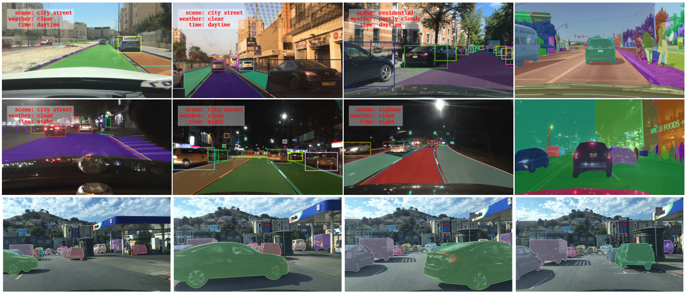
Because the density of pixel-level seg labeling is significantly more labor-intensive than bbox annotation, the dataset establishes specific splits tailored to distinct visual tasks. While bbox detection annotations span the complete 100,000-frame keyframe set, full instseg masks are available on a standardized subset (such as the 10,000-image evaluation split). Our models trained on the 10k image subset where the images are the 10th frame In our comparative pipeline, we align bbox evaluations (Box AP) directly with the detection subsets, while instance-level mask metrics () and precision/recall calculations are evaluated exclusively over the verified instance mask subsets. This ensures equitable evaluation across traditional edge-based techniques, convolutional architectures, and vision transformer foundations.
Before examining the neural network architectures of YOLO26 and SAM 3, we implemented a traditional computer vision algorithm using Python and OpenCV. Rather than learning features from training data, this algorithm uses explicitly defined rules to locate vehicles and a graph-based optimization algorithm called gc to segment them. Our implementation consists of two main stages: detection and seg. First, thresh identifies pairs of vehicle taillights, which provide an approximate vehicle location. Second, gc uses the color relationships between neighboring pixels to determine which pixels belong to the vehicle.
The first question the algorithm must answer is what makes a car a car? To avoid getting too philosophical, try going through the dataset images and keeping note of what similarities between the photos help you find the cars.
Features that stood out the most to us were the symmetry of the back of the car, taillights, and license plates. goes over these strategies, all with their respective downsides. For the simplicity of the algorithm, it will detect taillights by using color thresholding.
r0.2
The algorithm begins by converting the image from RGB to HSV (Hue, Saturation, Value) color space. Unlike RGB, HSV separates color from brightness, allowing the algorithm to isolate red pixels more easily. Because red wraps around the HSV hue scale, the algorithm selects pixels within two hue ranges, and , while requiring sufficient saturation and brightness. This produces a binary mask of red objects, ideally vehicle taillights .

gc models seg as a graph partitioning problem: pixels are nodes in a graph, neighboring pixels are connected by weighted edges, and the algorithm finds the minimum cut that best separates foreground from background .
Figure [fig:mincut] illustrates the intuition behind this graph. Each white circle represents a sampled pixel or small region, and the black edges represent affinities between neighboring pixels. The red and green dashed curves show possible cuts through the graph. A good cut should pass along boundaries where neighboring pixels are dissimilar, such as the border between the car and the background, rather than through the interior of the vehicle where pixels tend to be more similar. Thus, the preferred cut is the one with the lowest total edge cost.

Here, is the foreground side of the partition and is the background side. The minimum cut chooses the partition that minimizes the sum of the weights of all severed edges. Intuitively, cutting a weak connection is cheap, while cutting a strong connection is expensive.
To assign these costs, gc first measures the color difference between neighboring pixels. If and are the color vectors of pixels and , then their dissimilarity is
This is the Euclidean distance in color space. Two pixels with similar colors have a small distance, while very different pixels have a large one.
This dissimilarity is then converted into an edge weight (or affinity) using an exponential function: The intuition is straightforward: if two neighboring pixels look very similar, then is small, so is close to . This creates a strong edge, making it expensive for the cut to split those pixels apart. If the colors are very different, then the exponent becomes more negative, so becomes small. Such an edge is cheap to cut, making it a natural place for the seg boundary to pass.
A larger makes the graph more tolerant of color variations, while a smaller makes the graph strict, treating small color shifts as sharp boundaries.
In addition to these neighborhood edges, gc also links every pixel to two special terminals: a source node representing foreground and a sink node representing background. These terminal connections encode how well each pixel matches the foreground or background color models. gc learns these models from the initialization mask: pixels near the taillights and in the center of the ROI are marked as likely foreground, while the border of the ROI is marked as likely background. OpenCV then fits statistical color models to these two groups and optimizes the seg by minimizing the energy
The term is the data term, which penalizes assigning a pixel to foreground or background when its color does not match that model well. The term is the smoothness term, which penalizes cuts between neighboring pixels with high affinity. Thus, the final seg balances two goals: each pixel should match the appearance of its assigned region, and neighboring pixels with similar colors should remain together. The result is a binary mask in which the vehicle is separated from the surrounding road and landscape.
The previous section focued on technqiuces with explicit programming, such that the algorithm was specific to the domain/application. In contrast, deep NN are multi-layered machine learning algorithms that learn from any data that can be placed on a grid like camera images to produce driving outputs such as steering angle and speed. Deep learning, the practice of using these networks, only became practical recently due to advances in computing power, allowing real-time in-vehicle operation. Though still evolving, it has already transformed areas like computer vision and driven major breakthroughs in autonomous driving performance. SAM 3 and YOLO26 both use developments of artificial NNs, so it would be good to get an intuition on how they work.
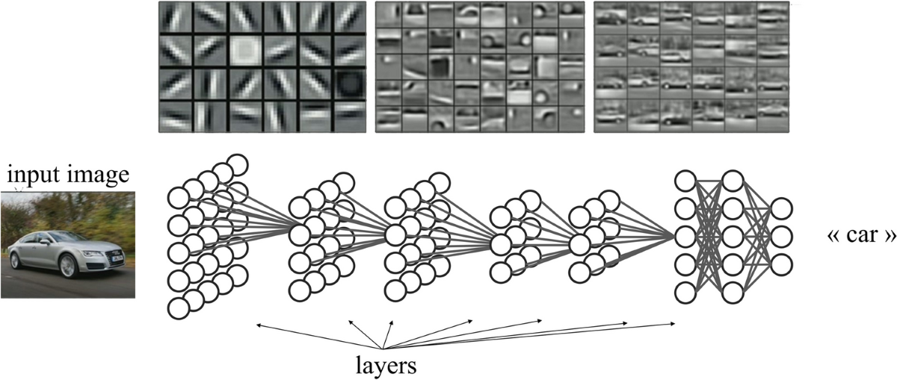
At a high level, this image represents how a deep neural network takes messy, raw sensory data and filters it step-by-step into a single, confident decision
The Stacking of Layers (From Left to Right): Information flows strictly from left to right. There are Multiple hidden layers learn hierarchical features where each column of circles is responsible for a higher level of abstraction than the one before it.
Earlier layers look for tiny, primitive clues (like sharp edges or color boundaries).
Middle layers group those clues into recognizable sub-assemblies (like wheels, corners, or body panels).
Later layers assemble those parts into complete conceptual objects.
Neurons as “Activation Meters” (The Circles): Each circle is a neuron holding a single number (its activation). In the diagram, this is visualized through color intensity:
Pale circles are dormant or weakly activated neurons (). The pattern they care about is absent.
Solid, dark green circles are strongly lit (). They have spotted their specific pattern in the input and are shouting down the line to the next layer.
The Web of Connections (Weights & Biases): The dense web of lines between every node represents the learned connections (weights). If a neuron in layer 2 cares about seeing two specific edges together, it has strong connections to the corresponding neurons in layer 1. Some lines encourage downstream neurons to light up, while others suppress them.
The Output Layer (The Final Decision): At the far right sits the pink output layer. Each node here corresponds to a final candidate answer or class. That single lit neuron represents the network’s final guess as a value from 0-1 that comes from the activations from the previous layer.
Consider a neuron in layer . Its activation is determined by a weighted sum of all activations in the preceding layer , shifted by a bias and passed through an activation function:
In vector-matrix notation across the entire layer:
A weight acts as a learned dial measuring correlation:
Positive weights: If the network spots high-visibility reflective orange strips combined with an upright human silhouette, positive weights strongly reinforce the activation for a “highway construction worker.”
Negative weights: If the vehicle spots a two-dimensional image of a pedestrian pasted onto a flat billboard on the side of a delivery truck, negative weights penalize spatial depth discrepancies, suppressing false-positive emergency braking triggers.
The bias represents a neuron’s intrinsic reluctance or eagerness to fire. In an autonomous driving context, biases encode safety-critical priors:
For an everyday classification network, a low-confidence detection might simply be ignored.
For critical vehicle safety neurons (e.g., detecting an unlit pedestrian crossing an unilluminated roadway), the system may learn a calibrated bias threshold ensuring that even faint visual evidence elevates the activation sufficiently to alert the braking planner.
Without non-linear activation functions like the Rectified Linear Unit () or Gaussian Error Linear Units (GELU), stacking dozens of layers would collapse mathematically into a single linear transformation—incapable of isolating complex shapes amid sun glare, blizzards, and heavy rain.
A perception network begins its life with randomized parameters, outputting meaningless noise. To turn this system into an attentive navigator, engineers define a loss (), which quantifies the discrepancy between the network’s predictions and ground truth:
In car vision, the loss function penalizes specific real-world errors where the output doesn’t meet the gt.
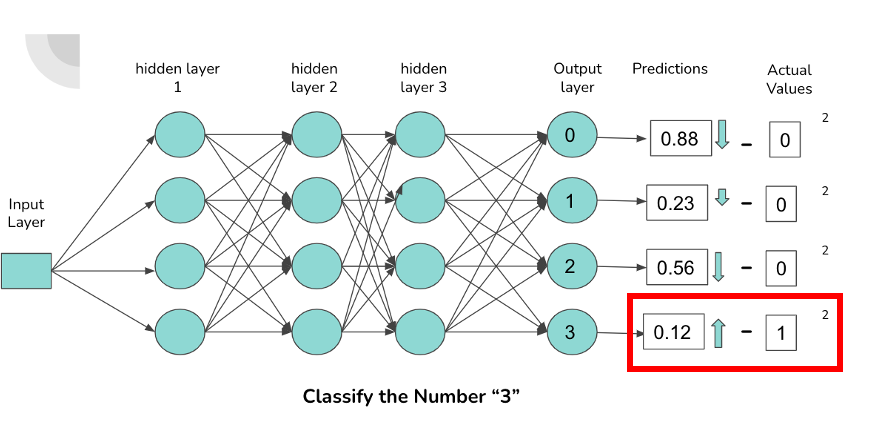
The cost function defines a rugged landscape over millions or billions of parameters. To minimize , the system employs backprop to calculate the gradient. See 12 to see how the partial derivative is derived.
The key here is to remember that the activation in the previous layer is actually determined by its own set of weights and biases. The learning algorithm takes an iterative step in the exact opposite direction:
where represents all weights and biases, and is the learning rate. Over millions of training sequences captured across diverse vehicle fleets, this gradient walk gradually tunes every weight until the vehicle reliably parses edge cases, wet reflections, and crowded intersections.
SAM 3 is a promptable concept seg model used in object detection . It accepts an image and a text prompt consisting of a short noun phrase (i.e. “boots” or “red Ford”) and generates a bounding box surrounding each object in the image that matches the prompt. Meta’s pre-trained SAM model understands more than 4 million concepts, including cars .
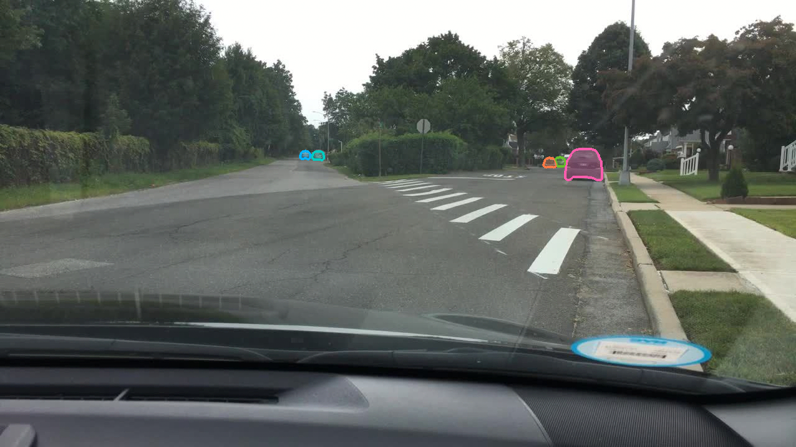
SAM 3 uses a dual encoder-decoder transformer architecture with approximately 840 million parameters, consisting of a “perception encoder” and a DETR-based decoder .
The perception encoder actually refers to two separate encoders: a vision encoder, which only looks at the provided image, and a text encoder, which only looks at the user prompt . The vision encoder runs exactly once per image. It segments the image into patches, and maps each patch to a special vision token that encodes the visual properties of that patch. The vision encoder was trained on 5.4 billion image-text pairs, so each token captures some visual data related to the linguistic concepts in that dataset .
By contrast, the text encoder dynamically runs in response to each user prompt. It was trained on the same 5.4 billion image-text pairs as the vision encoder, and uses a causal transformer network to convert the noun phrase into a sequence of token vectors that collectively encode the meaning of that prompt .
The tokens generated by the text and vision encoders are then passed to another transformer called the fusion encoder . The fusion encoder infuses the meaning of the text vectors into each of the patch vectors. Thus, the final output is a set of new tokens, each of which encodes both a patch of the image and the ways in which that patch relates to the user’s prompt .
These fused visual tokens are then passed to a six-layer, DETR-based decoder alongside 200 learned “object query vectors” and a single learned “presence token” . One can think of an object query as a scout that tries to outline a specific instance of an object in the text prompt. The presence token, on the other hand, essentially gathers information from these query vectors to create a global picture of the image, in order to determine whether the text prompt exists in the image at all .
The final step of the algorithm consists of inputting each object query into dedicated MLPs that output the predicted bbox of the object and the probability score that the object matches the prompt . If the local probability score times the global probability score is low, then the model discards the object query .
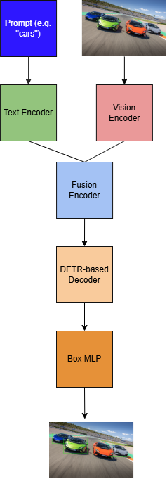
SAM 3 uses Meta’s Perception Encoder (which adopts an OpenCLIP-style contrastive vision-language architecture) to map images and text prompts to vectors in a shared feature space through a separate vision encoder and text encoder .
The text encoder’s job is to convert a user prompt into a sequence of vectors that encode the linguistic meaning of that prompt . It does this by converting the user prompt to a list of special tokens and passing them to a causal transformer network with 300 million parameters that perform self-attention on those tokens . In particular, the steps are:
Tokenization: The user prompt is converted into a list of integer IDs called tokens. Each token corresponds to a substring in the prompt that the model will try to identify in the image .
Embedding: The tokens are passed to the first layer of the neural network. Each token is mapped to 1024 neurons, which collectively encode the meaning of that token and its position in the list of tokens .
Transformer Blocks: Having embedded the isolated meaning of each token, the encoder passes the token neurons to 24 transformer blocks, which further encode the meaning of each token in the context of the entire prompt .
Final Normalization and Projection: Having contextualized each token across all 24 transformer blocks, the encoder normalizes the final token vectors and projects them from down to so that they are in the same space as the vision encoder’s vectors .
The goal of tokenization is to break the user prompt down into common substrings called tokens (e.g., “a,” “the,” “able”), to help determine which concepts SAM 3 will identify in the image . This may not be intuitive: why not process each individual word in the prompt instead? The reason is twofold. First, if the user entered a word with even a minor typo, then the model would fail to encode that entire word. With substrings, the model can at least partially understand misspelled words. Second, there are millions of words in the dictionary. The token embedding matrix described in the next step would be too massive.
The tokenizer uses an algorithm called byte-pair encoding (BPE) for this task . We’ll first describe it at a high level and then dive into the details. At a high level, the tokenizer scans a massive dataset of text to learn which substrings are most common. Each of these substrings becomes a token and is assigned a unique token ID, both of which are stored in a global list. This list-building step runs only once. The tokenizer then breaks down each user prompt into tokens from the global list in such a way that common words remain whole and uncommon ones are chunked into smaller substrings .
Now let us see how the tokenizer actually generates the list of tokens. The BPE vocabulary starts with a list of 512 tokens which have IDs 0–511. The first 256 tokens are raw UTF-8 bytes, some of which are ASCII and others Latin Unicode characters. The other tokens are those same characters with an end-of-word delimiter “</w>.” For example, if token 0 corresponds to “!”, then token 256 would correspond to “!</w>.” The purpose of this delimiter is to allow the model to differentiate between substrings and complete words (e.g., “car” versus “car” when put inside “carpet”).
More tokens are then added to this starting list, which correspond to sequences of UTF-8 characters instead of individual ones. To generate a new token, the encoder scans the training text dataset to find the most frequent pair of adjacent substrings such that both substrings are contained in the current token list. This might be “t-h,” for example, the first time that a token is ever generated. The tokenizer then assigns this token an ID, starting at 512. This process repeats until there are 49,406 tokens. Then two new tokens are appended, which are the strings “<startoftext>” and “<endoftext>” with respective IDs 49,406 and 49,407. Their purpose will become apparent in the SA stage. Finally, each token along with its ID is saved to a file; they do not need to be generated again.
Notice that, with the exception of the starting 512 tokens, the smaller a token ID, the more frequent its corresponding token. This property is critical to how tokens are extracted from text prompts, a process that follows these five steps:
We split the prompt into each of its words with the appended “</w>” delimiter.
We break each word down into its individual characters while keeping </w> attached to the last one. Notice that each of these substrings is a valid token.
For each of these groups of tokens, we identify the pair of adjacent tokens that, when concatenated, form the token with the smallest token ID. If no tokens can be merged to create a new token, we stop.
We merge these two tokens into a new token.
We repeat step 3 with each of the unmerged tokens and the merged token.
When this process ends, the tokenizer will have a list of token IDs that are almost ready to pass to the text encoder’s neural network. First, however, the tokenizer wraps this list in the aforementioned start and end tokens.
SAM 3 also has a context length of 32 tokens . So, if the list contains more than 32 tokens (including start and end), then the tokenizer overwrites the token at index 31 with the end token and truncates the remaining tokens. If it contains fewer than 32 tokens, on the other hand, then the tokenizer pads zeros after the end token so that there are exactly 32 .
Any individual token carries two levels of information: its semantic meaning divorced from any context, and the meaning of its position in the token list . The embedding step encodes this combined information across 1024 neurons per token in the first layer of the neural network . The network references two lookup tables for this task :
A token embedding table, which is a matrix whose rows correspond to one token in the global token list and whose entries represent embedding weights .
A positional embedding table, which is a matrix whose rows correspond to a position index of a token, and whose entries are position weights .
For any token ID, let j be its index in the input list and be its index in the global token list. The value v of the -th neuron that corresponds to this token is calculated by .
Only embedding the contextless meaning of each token would risk misinterpreting the prompt. The meaning of “bank,” for example, is completely different depending on whether it follows the word “river” or “Chase.” The text encoder therefore utilizes 24 transformer blocks that essentially contextualize the meaning of each token . Each block consists of 6 layers :
Layer Normalization: Let be the vector of neurons that correspond to the token. We compute the normalized vector of , denoted .
Self-Attention: We update the meaning of each normalized token vector so that it contains contextual information from other tokens in the prompt. This contextualized vector is called .
First Residual Connection:
We let
.
Second Layer Normalization: We normalize using the same LayerNorm formula as in step 1 .
Multi-Layer Perceptron: We pass to a feedforward neural network that computes a vector , which encodes how ’s descriptive tokens visually interact .
Second Residual Connection: We let .
The encoder normalizes each token vector using PyTorch’s LayerNorm function . For a token vector , layer normalization is where and are the mean and variance of the components of , is a small stabilizing constant, and and are learned scale and shift vectors:
denotes the average of .
denotes the variance of .
. It prevents division by zero.
denotes elementwise multiplication.
and are two learned vectors in .
There are several reasons why this specific formula is applied to each token vector. The first is numerical stability. Token vectors can contain such massive neuron values that performing math operations on them risks overflow. Subtracting from and then dividing by the square root of the variance solves this problem, as it results in a standardized vector whose magnitude is roughly 32.
More importantly, however, that standardized vector is guaranteed to have a mean of 0 and variance of 1—regardless of ’s original neuron values. And because and are static learned parameters, applying them to the standardized vector ensures that every token vector is calibrated to the exact same learned scale and shift across all 1024 dimensions. This property is crucial to the softmax function, as will now become apparent.
So far, the text encoder has only looked at each token in isolation. Here, however, the encoder takes each token and essentially absorbs the context of all preceding ones and itself . That is, for any normalized token , we deduce its properties (like color, numerosity, etc.) from both and each of ’s preceding tokens and encode that contextual information in a vector called .
Calculating involves two steps :
Calculating a list of property vectors that separately encode different properties of .
Concatenating each of these property vectors into a single vector that encodes the full properties of .
Consider a prompt with respective normalized token vectors , and say that the only properties we want to extract from each token are its color and texture. We calculate by merging two property vectors and , where encodes ’s color and encodes ’s texture.
Each is calculated through a separate attention head, which applies the following formula :
where in this simplified two-head example.
The above formula is a weighted sum of value vectors, each of which corresponds to a token , where . The weight for is proportional to the degree to which describes with respect to .
Consider, for instance, a prompt “bloody white bandage” with respective normalized tokens , and , and say that we want to calculate the color property vector of . Then
Here, corresponds to “bloody,” and should encode the notion of “red.” corresponds to “white” and therefore encodes the color white. Finally, since most bandages are white, also encodes the color white. One could reasonably hypothesize that the model might give the highest weight because of this fact, as describing a bandage as “white” is not as helpful as “bloody.”
But how do we calculate these property vectors? Let be the token that we want to contextualize. To calculate the attention weights, we first map each token to an attention space . This space has the special property that the more aligned the image of with the image of , the more frequently that and appear together in the training data. We then essentially assign the dot products of each with in this space to be the attention weights .
In particular, each attention head for property has three separate learned matrices , , and , which are a query matrix, key matrix, and value matrix respectively . We multiply by to obtain a query vector and also multiply by to obtain key vectors .
The key vectors and query vector lie in the same attention space . One can think of as a “search query” asking for information related to property (e.g., “color”), while each acts as a “label” advertising how much information token holds regarding . Measuring how related the query vector is to each key vector involves three steps :
We take the dot product , which measures how aligned and are .
We multiply this dot product by a scalar to obtain .
We pass to a softmax function to obtain the final weight .
An obvious question comes to mind: given the alignment property of the attention space, why is strictly measuring how aligned the key vectors and query vectors are not enough for calculating the attention weights? In other words, why do we not let each ?
First of all, only using directional alignment would require us to normalize and and throw away their lengths. The length of the key vectors, however, is an important indicator of how in-need of attention they are. If two key vectors are both closely aligned to a query vector, then the longer one will correspond to a token that is more in need of attention. Therefore, the magnitude of the key vectors is a tiebreaker metric after alignment.
The reason we divide each dot product by is numerical stability . Recall that each query vector and key vector is in . Therefore, the variance and magnitude of their dot product scale with , so they need to be shrunk down by to prevent extremely large or small values .
Finally, there is the question of why we apply the softmax function to these scaled dot products . The softmax function does two things:
The denominator forces the sum of the attention weights to be 1.
The numerator amplifies the variance of the attention weights.
We want the sum of the attention weights to be 1 mainly because of numerical stability. After the SA step, we pass this vector to more and more layers which apply activation functions to it. We do not want these activation functions to cause an overflow. We also exponentially amplify the attention weights so that 100 irrelevant tokens do not collectively drown out 2 important ones.
Now that we have calculated the attention weights, how do we calculate the value vectors? This is where the matrix comes into play . We multiply each token by to obtain a value vector , which encodes the literal meaning of as it relates to in the context of . Returning again to our bandage example, will encode the color “red” and will encode some notion of “wet” or “damp” ( is not the transpose, but is the value matrix for the texture attention head).
Once we have both the weights and the value vectors , we compute the context vector using Equation [eq:context-vec] .
Finally, we merge the individual context vectors into a single vector that captures all the properties about learned by the attention heads . We concatenate our color and texture context vectors end-to-end into a single vector in , and multiply the result by a learned output matrix : This final vector mixes the extracted color and texture properties back into the model’s original embedding space, giving us the contextualized update for .
The actual number of attention heads that SAM 3 uses in the text encoder is 16 by default, and the dimension of the key, query, and value vectors is , where is the dimension of the token vectors (by default ) .
At this point, it is natural to ask why we do not simply output as our updated token vector. The problem is that during the SA step, a token can absorb so much context from its surrounding words that its own original meaning gets washed out. Returning to our “bloody white bandage” example, if the attention heads focus heavily on extracting the modifiers “bloody” and “white,” the output of might barely retain the core fact that token 3 is a bandage.
To prevent this, the encoder adds the original, non-normalized token vector to the output of the SA layer :
By adding back the non-normalized vector to , we no longer have the property that has a standardized mean and variance. So, before passing to the next stage of the block, the encoder normalizes a second time using the exact same formula as in Equation [eq:layernorm], but with a separate pair of learned scale and shift vectors : where and are the mean and variance of the components of . Re-centering the neuron values of around 0 is important because the upcoming Multi-Layer Perceptron uses a non-linear activation function whose sensitive decision region lies directly around zero.
At this point, encodes two levels of meaning: the isolated meaning of , as well as contextual properties of deduced from its preceding tokens. Unfortunately, we have added those contextual properties by summing independent value vectors. That is, we have not looked at the combined features of yet, to see if they collectively reveal any new context.
To figure out how the gathered properties visually interact with each other, the encoder passes each independently through a two-layer feedforward neural network called a Multi-Layer Perceptron (MLP) : Calculating involves three steps :
Expansion: We multiply by a learned weight matrix and add a learned bias vector to project the token into a larger space of 4096 neurons . The dot product of a row of with (plus the bias term) is a number that represents the degree to which fits some pattern. Notice that this calculation involves all the neurons of , so we are deducing patterns from multiple properties of , not just individual descriptive tokens.
Non-Linear Activation (GELU): We pass each of ’s 4096 neurons through the Gaussian Error Linear Unit activation function, , where is the standard normal cumulative distribution function. GELU essentially takes each neuron value and outputs near zero if it is negative, or the original value if it is positive. In other words, negative neuron values mean that a pattern was not detected, and we suppress them in order to ignore that pattern.
Compression: We multiply our GELU-activated vector by a second learned matrix and add a bias vector . This projects the visual deductions made by the active pattern detectors down into the model’s original 1024-dimensional lexical token embedding space .
Finally, just as in step 3, we add the output of the Multi-Layer Perceptron directly back to the pre-MLP vector : This preserves both the original token identity and the raw context gathered during SA in , while layering on the visual interaction features deduced by . The resulting vector is the final output of the transformer block and serves as the input vector for the next transformer block, repeating across all 24 blocks of the text encoder .
After passing through all 24 transformer blocks, each token vector has absorbed the contextual meaning of the tokens that precede it .
Before outputting the contextualized token vectors , the text encoder performs two final operations to prepare them for the fusion encoder :
Final Layer Normalization: Because the 24th transformer block concludes with the second residual connection , adding two un-normalized vectors, the encoder applies one last LayerNorm step with learned parameters :
Linear Projection: While the text encoder represents each token using 1024 neurons, SAM 3’s downstream fusion encoder and decoder represent image regions using 256 neurons . So, to keep the lexical token vectors and image vectors in the same space, the encoder multiplies each normalized token vector by a learned projection matrix and adds a bias vector :
This produces a final list of 32 contextualized text vectors which are now ready to be combined with the image features in the fusion encoder .
The vision encoder is the first process run on an image or a divided video given to SAM 3 by the user. Thus the encoder can be thought of as the eyes of SAM 3. The vision encoder’s job is to convert this input image into a spatial grid of feature vectors that represent the image’s visual content. The vision encoder transforms input images into hierarchical feature maps (the grids of the image into data) at multiple scales . It is composed of two primary components that handle separate tasks:
ViT Backbone: A 32-layer Vision Transformer that extracts patch-level features .
Image preprocessing and patch embedding
Positional encoding
Windowed and global attention
SAM3DualViTDetNeck: A feature pyramid neck that produces multi-scale representations .
Feature-pyramid neck
Output & downstream processing
SAM 3’s visual backbone comes from the Perception Encoder, which is a large-scale contrastive vision-language learning encoder .
SAM 3’s vision encoder uses the Perception Encoder (PE-L+) backbone to transform an input image into numerical representations called visual tokens . The image is resized and normalized using padding to match a square aspect ratio into a new image .
Now each image is 3 RGB grids of 2 in .
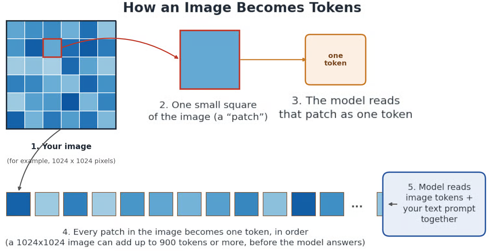
Now the image subdivides into a grid of patches (tokens), where each patch contains pixels of the image :
Each token is projected into a 1,024-dimensional feature vector. These vectors represent learned visual tokens rather than raw pixel values, allowing the network to process information about edges, textures, shapes, and object parts .
The 1-D vector () is passed through a trained linear projection layer. The weights and bias are set by the Perception Encoder . The weight matrix is , making the output embeddings with 1,024 learned feature values.
This feature vector is essentially a dense embedding capturing the most relevant information from the image while discarding unnecessary details, similar to how an LLM converts text into word embeddings. These vectors capture basic local visual patterns (edges, textures) and their relationships within each patch.
SAM 3 incorporates positional information into visual representations to keep track of where each patch was on the image. Unlike traditional Vision Transformers that rely solely on static, pre-learned absolute positional tables, SAM 3 uses a hybrid approach consisting of Rotary Positional Embeddings (RoPE) and windowed absolute positional embeddings .
Then the Query, Key, and Value are calculated from the output of linear projections :
Query (): what information this patch is looking for.
Key (): what information this patch can offer.
Value (): the information this patch contributes.
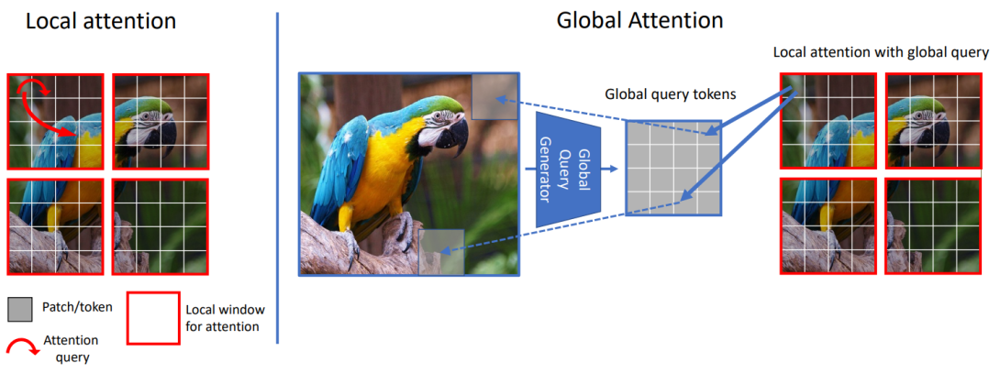
Rotary Positional Embeddings (RoPE) modify the query () and key () vectors dynamically inside the SA layers :
Mechanism: The model applies a rotation matrix to the query and key vectors where the rotation angle is determined by the token’s spatial coordinates (its 2D row and column indices on the image grid) .
Relative Distance: The dot product of the rotated query () and key () depends only on the relative geometric distance between two patches rather than their absolute canvas coordinates. This relative position representation generalizes across varying input and output resolutions .
SAM 3 also uses windowed absolute positional embeddings to track tokens within bounded regions. Every patch within a specific local window (Figure [fig:global]) is assigned an absolute coordinate ID relative to that window’s internal boundaries. While RoPE informs the model how far apart two patches are, windowed absolute embeddings add local context of each patch to the image .
Consider two patches on the same car: one covers the windshield and another covers its rear window. The // calculation introduced in Equation [eq:scaled-attention] helps each patch incorporate wider visual context instead of treating those two patches independently. Unlike causal text attention, visual attention does not use an upper-triangular future-token mask. The vision backbone combines local window attention with periodic global information exchange, depending on the block .
Scaled dot-product attention is written as
Backbone Network: The ViT Backbone processes the input image, producing single-scale patch embeddings .
Multi-Scale Rescaling: Features are upsampled via transposed convolutions and downsampled via pooling/strided convolutions to construct multiple spatial resolutions .
Channel Alignment: and convolutional projections align channel dimensions to while refining spatial smoothness .
Output Pyramid: The result is a series of feature maps (the “pyramid”), each at a different scale, rich in both context and detail .
Fine-resolution feature map ( scale factor, ):
Preserves fine spatial detail, making it useful for precise localization and small-object boundaries.
Intermediate fine-resolution feature map ( scale factor, ):
Retains spatial detail with less computation than the finest scale.
Native feature map ( scale factor, ):
Matches the ViT’s original spatial grid.
Coarse-resolution features ( scale factor, ):
Captures context about larger structures.
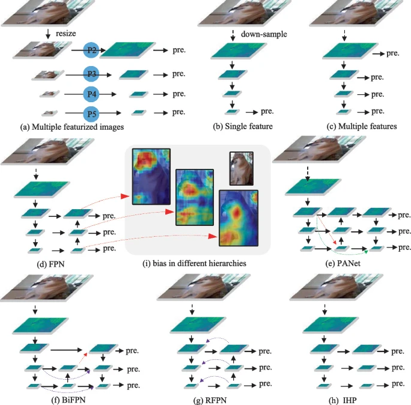
Up to this point, the vision encoder and text encoder have run in total isolation: the vision encoder has converted the image into a list of patch vectors (corresponding to a grid of -pixel patches), and the text encoder has converted the user prompt into a list of 32 text vectors . The fusion encoder’s job is to infuse the meaning of the text vectors into the patch vectors . Thus, the output of the fusion encoder is a sequence of “conditioned frame embeddings,” which encode both the local geometry of each patch as well as the ways in which that patch relates to the text prompt .
It computes these conditioned frame embeddings by passing both sets of vectors through a 6-layer transformer network, very similar to that in the text encoder . Each fusion block follows the exact same normalization, residual, and MLP principles as the text encoder blocks . There are only two differences. First, the image vectors cross-attend to the text vectors; in other words, the image vectors become the query vectors and the text vectors become the key and value vectors . Second, the image vectors also perform self-attention . Thus, each block consists of these 9 steps:
First Layer Normalization: Let be the vector of neurons corresponding to the image patch. We compute its normalized vector .
Image Self-Attention: We update each normalized patch vector so that it absorbs visual context from all other patches in the image, producing .
First Residual Connection: We preserve the original patch features by letting .
Second Layer Normalization: We normalize .
Image-to-Text Cross-Attention: We update each normalized image patch vector by matching it against the text token vectors , producing a prompt-infused vector .
Second Residual Connection: We let $w_i = z_i + \\ \text{CrossAttention}(\hat{z}_i; t_1, \dots, t_{32})$.
Third Layer Normalization: We normalize .
Multi-Layer Perceptron: We pass to a feedforward neural network that computes , which encodes how the visual features of the patch and the linguistic properties injected by the text prompt non-linearly interact.
Third Residual Connection: We let .
Because we have already discussed how self-attention works in the vision and text encoders, we will only elaborate on how the image-to-text cross-attention works in this section.
After the first residual connection and second layer normalization, each normalized patch vector understands its own visual appearance in the context of the whole image, but still does not know which words in the user prompt relate to it. Here, the encoder takes each image patch and absorbs the most relevant linguistic properties from the text token vectors , encoding that information in a vector called .
The math of cross-attention is basically identical to self-attention, except that instead of computing queries, keys, and values from the same sequence of vectors, queries come from the image patches, whereas key and value vectors come from the text tokens .
Just as before, calculating involves two steps:
Calculating a list of property vectors from the text tokens that separately encode how different linguistic properties of the prompt apply to image patch .
Concatenating each of these property vectors into a single vector and multiplying by an output matrix to project the result back into .
For a given property , each CA head applies the weighted sum: where each value vector corresponds to a text token , and the scalar weight measures the degree to which describes the visual content of image patch with respect to .
Returning to our “bloody white bandage” prompt with text tokens (“bloody”), (“white”), and (“bandage”), suppose is an image patch located directly on a red stain on the bandage. When computing for the color head, the CA layer will likely assign a high weight to (“bloody”) because the red pixels in patch align strongly with the concept of blood.
To compute the weights and value vectors , each CA head for property uses three learned matrices :
Visual Query: We multiply the patch vector by to obtain a query vector . One can think of this kind of query vector as the image patch asking the text prompt which words match its visual appearance with respect to property .
Text Keys and Values: We multiply each text
token
by
to obtain key vectors
,
and by
to obtain value vectors
.
Scaled Dot-Product and Masked Softmax: Just as
in SA, we compute the scaled
alignment score
for each text token
.
To ensure the image patch never attends to the empty zero-padded slots
after <|endoftext|>, the encoder sets
for all padded token indices
before applying the softmax function:
Because
,
padded tokens receive an attention weight of exactly 0, and the weights over the actual words
in the prompt sum to 1.
Finally, just as in Equation [eq:sa-concat], we concatenate the property vectors across all attention heads and multiply by a learned output matrix to obtain $\text{CrossAttention} \\ (\hat{z}_i; t_1, \dots, t_{32})$ . In SAM 3’s fusion encoder, the number of attention heads is and the feature width is , giving each query, key, and value vector a dimension of .
Once CA has extracted the relevant text properties for patch , Steps 6 through 9 finish the block using the exact same logic as Steps 3 through 6 of the text encoder:
The Second Residual Connection, $w_i = z_i + \\ \text{CrossAttention}(\hat{z}_i; t_1, \dots, t_{32})$, adds the matched text properties to the visual patch vector so the patch retains its underlying visual features.
After normalizing , the Multi-Layer Perceptron expands from to neurons, applies a non-linear activation function, and compresses it back to neurons . Whereas the text encoder’s MLP deduced how multiple words in a prompt interact with one another, the fusion encoder’s MLP deduces how the visual features of patch and the linguistic features jointly confirm whether the patch belongs to the target object.
The Third Residual Connection () locks in this update and passes to the next fusion block.
After passing through all 6 fusion blocks, the resulting vectors each encode both a given patch’s visual features, as well as the relationships between that patch and the text prompt .
Up until this point, SAM 3’s text, vision, and fusion encoders have all been gathering information about the input image and text prompt. The DETR-based decoder finally uses that information to predict four things :
A bounding box for each candidate object.
Visual data about each candidate object.
A confidence score for each candidate object, indicating whether it is real or hallucinated.
A separate probability score, indicating whether or not the concept in the user prompt is present in the image at all.
The decoder does not only use the conditioned frame embeddings generated by the fusion encoder to make these predictions. It also inputs 200 so-called object queries (not to be confused with query vectors in an attention space) . Each object query acts as a prediction slot that proposes exactly one candidate object in the image it thinks matches the text prompt . Each object query is a pair of two things: a content vector, encoding the visual and linguistic information of that query’s proposed object, and an actual bounding box, which will eventually represent that object’s proposed region . Both the content vector and bounding box start out with learned initial parameters and are refined over time through the transformer blocks .
Additionally, the decoder initializes 1 learned global presence token, which will help determine whether or not the prompt is present within the image .
The object queries, bounding boxes, presence token, and conditioned frame embeddings are passed to 6 different transformer blocks, which each perform the following steps:
Self-Attention & Residual Connection: The 200 object queries and the presence token perform self-attention with one another, followed by a residual connection and Layer Normalization. This step ensures that no object query searches overlapping areas in the image .
Cross-Attention & Residual Connection: The updated queries cross-attend to the conditioned frame embeddings. This reminds each object query exactly what it is looking for. Again, this is followed by a residual connection and Layer Normalization .
Feed-Forward Network (MLP) & Residual Connection: Each query independently passes through a 2-layer feed-forward network (MLP) followed by a residual connection and Layer Normalization .
Per-Layer Box Refinement and Scoring: Dedicated MLP heads read each updated object query to predict a binary classification logit and a coordinate offset () from the bounding box predicted by the previous decoder layer . The updated bounding box is then passed to the next decoder block to guide its cross-attention .
Before an object query’s bounding box can be used in attention, its raw 4-dimensional coordinates must be projected into the same feature space as its content vector . SAM 3 does this at the start of every decoder block in two stages :
Sinusoidal Coordinate Expansion (): Each normalized scalar coordinate is first scaled to and expanded into a 128-dimensional vector whose components consist of alternating sine and cosine waves across 64 geometric frequencies : for . Low-frequency terms ( near ) capture coarse global position and overall box scale, while high-frequency terms ( near ) remain sensitive to subtle boundary shifts. Concatenating the four 128-dimensional coordinate vectors yields a single 512-dimensional sinusoidal box representation:
MLP Projection (): Because concatenation keeps the four coordinates in separate “regions” of the vector, is passed through a learned 2-layer reference-point MLP ( with a ReLU activation) . This MLP mixes center location with box dimensions and aligns the geometric encoding with the semantic space of the decoder.
During both self-attention and cross-attention, the resulting positional vector is simply added to the object query’s content vector when forming the Query and Key vectors . Because each decoder block updates at the very end, these positional encodings are recomputed dynamically at every layer from the latest refined boxes. Regarding the presence token, it has no geometry, so it has no associated bounding box and receives a zero positional encoding () .
In the DETR decoder, the 200 object queries and presence token use bidirectional self-attention to interact with each other .
Cross-attention is where the decoder queries attend to the conditioned frame embeddings. Recall Equation [eq:scaled-attention], the scaled dot-product attention formula. In particular:
The Query vectors are projections of the 200 object queries (including their positional encodings) and the presence token .
The Key and Value matrices are projections of the prompt tokens and conditioned frame embeddings .
Furthermore, SAM 3 adds a box-region positional bias using the bounding box predicted by the previous decoder layer so each object query focuses its cross-attention locally around its current candidate box .
Following cross-attention, each query vector passes independently through a 2-layer feed-forward network (MLP) with a non-linear activation (ReLU in DETR ) and a residual connection . The MLP projects each query vector into a wider intermediate dimension, filters out unhelpful activations, and compresses it back to . Because attention operations only compute weighted averages of features, this MLP step is essential for allowing each query to compute complex, non-linear combinations of the visual clues it just gathered .
In the original 2020 DETR architecture, bounding boxes were predicted directly from query embeddings without passing refined geometric boxes into subsequent layers . SAM 3 upgrades this design with iterative box refinement . At the very end of each of the 6 decoder layers, the normalized object query hidden states are fed into two parallel prediction heads :
Bounding Box Head: A dedicated 3-layer MLP with ReLU activations that reads each query vector and predicts a 4-dimensional coordinate delta () relative to the bounding box predicted by the previous decoder layer . Adding this delta layer-by-layer iteratively tightens the normalized bounding box coordinates around the target object .
Classification (Scoring) Head: A dedicated MLP head that maps each object query to a binary classification logit indicating whether the candidate object matches the prompt . Specifically, because SAM 3 decouples recognition from localization, this head outputs the conditional probability .
To prevent false-positive hallucinations—particularly when a user prompts the model with a concept or hard negative phrase that does not exist anywhere in the image—SAM 3 introduces a learned global presence token and a corresponding presence head . For example, if a user provides the noun phrase (NP) prompt “red Ford,” the model must determine whether a red Ford actually appears in the scene at all. Without a dedicated global recognition mechanism, an object detector may be forced to guess a bounding box or mask on a visually similar background car even when no “red Ford” is present.
In standard DETR variants, each individual object query is forced to solve two conflicting tasks simultaneously: global recognition (“What is in the image?”) and local localization (“Where are the exact boundaries of my specific instance?”) . Answering whether a concept exists in a complex scene requires global, whole-image context, whereas drawing a tight bounding box around a single object requires strictly local features . Forcing each of the 200 object queries to acquire global scene awareness degrades localization accuracy .
SAM 3 resolves this conflict by introducing the learned global presence token . Rather than originating from the vision encoder, the presence token is a standalone learned decoder parameter (a single vector initialized alongside the object queries) that is concatenated with the 200 object queries and processed alongside them through all 6 transformer decoder blocks . While the 200 object queries use box-biased cross-attention to focus locally on candidate object instances (such as three different vehicles in a photo), the presence token attends globally across the queries, prompt tokens, and conditioned image features to evaluate whether the prompted noun phrase exists anywhere in the image .
The presence token never predicts a bbox or seg mask . Instead, after exiting the decoder, the presence token is fed into a dedicated MLP classification head—the presence head—which first outputs a raw unrestricted real score called a logit and applies the sigmoid function to produce a single global probability score shared by all 200 object queries: .
Meanwhile, each individual object query
only solves the conditional localization problem:
. During inference, SAM 3
computes the final confidence score for each candidate object query by
multiplying its local conditional score by the global presence
score :
During training, the
presence head is supervised on all images using binary cross-entropy
loss, whereas the per-query classification scores only receive gradients
on positive images where the prompted concept is actually present .
For object query , the detector produces a raw score called a conditional logit, denoted by . This value is converted into a probability using the sigmoid function :
The conditional probability describes how likely the candidate object is to match the prompt under the assumption that the prompted concept occurs in the image. For example, if the detector produces , then
The detector therefore assigns an approximately conditional probability to this object matching the prompt.
The presence head produces a separate raw score, called the presence logit, denoted by . The sigmoid function converts this score into the probability that the prompted concept occurs somewhere in the image:
For example, if , then
In this example, the presence head assigns an approximately probability that the concept is present somewhere in the image.
The two predictions are combined through probability factorization . The final probability that object matches the prompt is the conditional object-matching probability multiplied by the probability that the concept is present:
Using the sigmoid outputs, this can be written as
Using the example values above gives
The resulting matching probability is approximately . The detector considers the candidate a strong match conditional on the concept being present, but the lower global presence probability reduces the final score. This combined score helps the model avoid treating a locally plausible candidate as a confident match when the image-level evidence for the prompted concept is weak .
A logit is an unbounded real-valued score produced before a probability is calculated. The sigmoid function maps any real-valued input to the interval between zero and one :
The inverse relationship expresses a logit in terms of a probability as its log-odds:
A logit of zero corresponds to a probability of . Positive logits correspond to probabilities greater than , while negative logits correspond to probabilities below .
In SAM 3’s probability factorization, the conditional logit and the presence logit describe different predictions. Each is first transformed by the sigmoid function, and the resulting probabilities are then multiplied. The final probability is therefore not generally obtained by multiplying or adding the original logits. Taking the natural logarithm of the final probability gives
This is the sum of the logarithms of the two probabilities, not generally the sum of the original logits. The distinction matters because the sigmoid function transforms each logit independently before the probabilities are combined .
In summary, the detector estimates how well an individual object matches the text prompt, conditional on the concept being present, while the presence head estimates whether the concept occurs anywhere in the image. Combining their probabilities accounts for both the quality of the individual object match and the overall evidence that the prompted concept is present .
The detector identifies possible objects and estimates their bboxes, but a box only indicates where an object is located. It cannot describe the outline of a person, the spaces between a bicycle’s wheels, or the shape of an object partly hidden behind another. The segmentation head provides this additional detail by predicting which image pixels belong to each detected object. In SAM 3, these predictions are also guided by the text prompt, so the head aims to segment objects that match the requested concept rather than every object in the image .
Consider an image containing two red Fords and a blue car, with the prompt “red Ford.” The detector may represent the two matching cars with different object queries, each describing one possible object. The segmentation head uses these queries to predict a separate instance mask for each car. It also produces a semantic mask that marks pixels belonging to any red Ford, without distinguishing between the two cars. Thus, instseg answers which pixels belong to this particular object?, while semseg answers which pixels belong to the prompted concept? Figure 4 shows how both results are obtained from the same image features .
The left side of Figure 4 shows three kinds of information. The fusion encoder output describes the image in the context of the text prompt. The finer feature-pyramid maps and preserve more spatial detail from the image encoder. Finally, the detector supplies 200 object queries , representing possible individual objects. These queries are candidates, not 200 objects that must appear in the final result . The implementation can optionally apply another round of CA to reinforce the relationship between the visual features and prompt tokens before constructing the masks .
The center of Figure 4 is the pixel decoder. The fused image representation initially covers a relatively coarse grid. This is useful for recognizing what appears in the image, but a coarse grid alone cannot closely follow narrow or irregular shapes. The pixel decoder therefore combines it with the finer image features and progressively increases its resolution, first to and then to . The result is a shared grid in which every location contains a 256-dimensional pixel embedding: a learned description of the visual information at that location. The grid is still smaller than the original image, but it provides a much more detailed basis for tracing object boundaries. This pixel-decoding step is performed once and shared across all object queries.
At the right side of Figure 4, the shared grid branches into two predictions. The semantic head converts it into a single score at every location, indicating whether that location belongs to any instance of the prompted concept. The instance head instead produces a 256-dimensional embedding at each location . Meanwhile, a small three-layer mlp converts each object query into its own 256-dimensional mask embedding . The mask embedding represents the particular object whose outline the head is trying to recover. This follows the mask-embedding approach of MaskFormer .
Figure 5 illustrates the final comparison. For one object query, the model compares its mask embedding with the embedding at every location in the image grid. A dot product gives a logit, or raw mask score : Here is the score after applying the sigmoid function, which maps the logit to a value between 0 and 1. A larger value indicates a stronger prediction that the location belongs to that object. For example, a pixel on the first red Ford may receive a high value for that car’s query but a low value for the second Ford’s query. The same image grid can therefore produce different outlines for different objects without being recomputed.
The head initially produces one candidate instance mask for each of the 200 queries, along with the single semantic mask. It does not keep every candidate: the detector’s matching probabilities are used to select the queries that correspond to the prompt. Each selected mask can then be converted to a binary outline by applying a threshold to its predicted values (for example, ), and the mask is resized from to the original image resolution .
The distinction between the two outputs is important. The semantic mask indicates the combined area belonging to the requested concept, whereas the instance masks preserve the identity and shape of each separate object. In this way, the segmentation head builds on the detector’s answer to where is the object? and provides the more precise answer to which pixels make up that object?
You Only Look Once (YOLO), originally an object detection model, now is capable of object detection, instseg, semseg, depth estimation, classification, pose estimation, oriented bboxes, and tracking .
In this section we explore the creation, and functioning of the original YOLO model. We conclude by detailing how its creation eventually led to YOLO26 which is the model that we use The original YOLO or You Only Look Once was developed by Joseph Redmon in 2016. It attempted to answer the question ’What if an seg model could look at an image once, and know exactly what is on it?’ To do this it used a 24 layer CNN, with 2 final fully connected layers .
Before diving into how exactly a CNN works, it is important to define the input for this version of YOLO. Regardless of the size of the original image, before the processing detailed in the next paragraph, all images get resized to a px image, this is done to reduce the amount of data that the model has to infer on .
A CNN or CNN is a type of NN which has convolutional layers, these layers have a learned filter that helps the NN extract features from the input image, such as edges or other learned patterns like a license plate in the case of a car. A convolution at the end of the day is an operation that when applied to two other operations/equations/functions, produces a third operation/equation/function . In the YOLO CNN described earlier as having ’24 layers’, those 24 layers are 24 convolutional layers, with each having a given learned pattern .
In combination the 24 convolutional layers, produce a grid on the image (with depending on the level of detail/granularity that we want from the image). At each cell of the grid YOLO attempts to see (using the convolutional layers) if there is a learned pattern, if there is then it will create a bbox around it. A bbox can be imagined as a square/rectangle whose perimeter ’perfectly’ encapsulates the object that a cell detected, and also presents the name of the object found and value between 0 and 1 which is how confident the model is that the given object is present.
However as we discussed, each cell has the possibility of generating a bounding box if the object falls inside of it, but what happens if a given object falls inside multiple cells? If this is the case, then multiple bboxes will be created for a given object, but how can we possibly say that a given object is somewhere, when we are not sure that it falls on one cell vs the other?
This is where the two final fully connected layers come in. They are in charge of using nms (also known as NMS), which essentially looks at the confidence scores of each bounding box that is around a singular object, finds the one with the highest confidence, and removes all others . After all extra bounding boxes are removed from the image, YOLO finally shows the image with the bounding boxes drawn on top of each object found, based on the learned patterns that the convolutional layers had .
In 2020, YOLO’s original creator Joseph Redmon, decided to depart from cv research (the field of teaching computers/machines to interpret visual data). His decision to leave this field of research was first expressed on Twitter, where he expressed his reasoning for it as seeing his work having possible "...military applications and privacy concerns eventually became impossible to ignore." .
Regardless of his reasoning, the work done on YOLO was seen by multiple authors as important to keep working on. Multiple teams have since developed different versions of YOLO, all with the same unified goal of generating an inference on an image fast and accurately. The Spanish company Ultralytics developed YOLO26 , which at the time of this writing is considered to be the latest version of YOLO created .
In this section we will explore how YOLO26 works, how it is different from the original YOLO by Redmon, et al. (2016), and the qualitative applications that we created for our project .
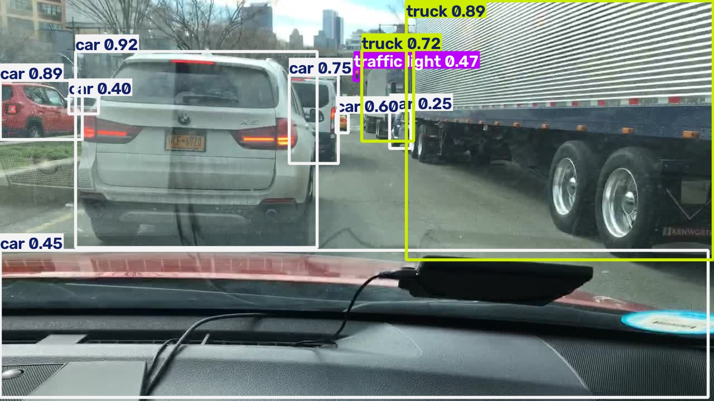
Assuming some form of readable input data (an image or a video), YOLO26 is composed of 3 main parts: a backbone, a neck, and a set of heads
The backbone captures "...hierarchical representations of visual patterns" . The backbone also generates multiscale feature maps in an effort to maintain semantic information from the rest of the data. A feature map is a combination of all the features (like edges or learned patterns) that a found object has. So for example in our project, a feature map of a car might have the location of the headlights, the license plate, the wheels or the handle for the door.
The neck combines the multiscale feature maps and the representations of the visual patterns, into data that heads can process .
The heads are where inferences occur in YOLO26. This version of YOLO, turns the ’simpler’ original YOLO which could only do bbox inferences, into "...[a] family of real-time vision models" .
What this means is that there exist different versions of YOLO26, which individually are pre-trained to do object detection (using bbox), pose-estimation, depth estimation, instance segmentation (similar to SAM3), simple image classification, semantic segmentation (like instance segmentation, but on the entire image), and oriented bbox which allows for bounding boxes to be at angle different from 0.
This enables users to use YOLO26 for applications that might have not been expected from the original YOLO.
Ultralytics also changed the size that the input images resize to. In the original version of YOLO by Redmon, all images would be reduced to a px image, in YOLO26 by Ultralytics, images are resized to px instead .
This is partially because of improvements in hardware since the original YOLO’s creation, and partly to allow for better quality at the time of processing, since the model now has access to about 200,000 more pixels from which to detect an object from.
Another thing that the Ultralytics team has added to the YOLO models since they started to work on it is different model sizes. What this means is that for each of the 5 versions of YOLO26 (depending on which head is being used), they are in themselves subdivided into 5 models of varying parameter size: .
"n" also known as nano is the smallest version of YOLO26 with only 2.4 million parameters; by contrast the largest, "x" has 55.7 million parameters. For reference, SAM3 has about 850 million .
It is important to remember that parameters are the ’learned’ information that a given model has access to when inferring on an image. For our project we used the "m" variation of YOLO26, which has 20.4 million parameters, more on why we chose to use that model in the Experimental Setup section .
This change in parameter size allows for YOLO26 to be run in a lot of different hardware, including embedded electronics like Raspberry Pi’s, or simple consumer grade laptops, without a salient decrease in video frame rate.
Regardless of how many parameters our specific YOLO26 model has, in the following sections we will go into detail of how each of the main components of YOLO26, established in the list before, behave.
As stated the backbone of YOLO26 is in charge of the first manipulations that occur to the image. To do this it uses a set of convolutional layers where once again, each is in charge of detecting a specific feature in the image.
The initial layers are in charge of detecting edges, colors, and other texture patterns like the gloss of a car versus the roughness of concrete. The later ones are in charge of detecting information that is higher in complexity such as ’hand’ or ’cat’. Each aspect of the image detected by a layer is what we know as a feature. The feature maps mentioned in the overview section, are all the possible features that were extracted by the convolutional layers .
However a question arises, how are subsequent convolutional layers able to increase in complexity from the previous ones? This is done through a repeating "Cross-Stage Partial Block", also known as CSP .
But what exactly does this block do? It uses stride 2 downsampling convolutional layers, which means that a convolutional layer that looks at an area of px and extracts all of the features it knows to extract, is followed by a layer that looks at an area of px that extracts all the information it knows how to extract, so on and so forth.
This allows for each subsequent layer to use the information from the previous layer as a base, to then increase the overall complexity of the information that the model can look at towards the end of the backbone .
YOLO26 however adds onto that stride 2 downsampling the "C3k2" optimizer . Whilst the initial layers find simple information like edges, the final 3 stages look subsequently look at an area of px, px and px respectively.
The optimizer allows each of these final layers to choose how it wants to handle the information from its layer. This is in the sense that whereas the base CSP will always output all of the information to the next layer, we can now choose to split that information in half, sending half of it to the end of the layer tree, and the other half to the next layer; or not. Regardless of if we choose to do the splitting or not, the information that is passed between layers is a feature map (since we extracted information from the image).
It is through the "C3k2" optimizer that YOLO26 is able to learn about the semantic information around the object, to then improve how well a given object is detected. For example say that we are looking at a picture of a car, the layer that we are interacting with is in charge of detecting the color of the wheel of the car. We can use the C3k2 optimizer to split the total area into two:
A subset of pixels where the color (assumed to be black as that is the normal color of tires) is present.
And a subset of pixels where the color is not present.
We can then pass the first subset of pixels to the next convolutional layer to find more information like the text in the tire that says which size it is; and the second subset to the end of the tree so that later stages of the model (the neck) can then understand something akin to ’These colors are not the wheel but are common around it’.
At the end of the convolutional layer tree (i.e. at the end of the backbone), all of the information that was split in the final layers through C3k2 is concatenated through the "Spatial Pyramid Pooling - Fast" or SPPF. As one might infer, the concatenated output takes the form of a pyramid with the earlier parts of the concatenation having the broader information (like edges), and the tip of the pyramid having specific information such as a car being positioned at point of the image. This output pyramid is then passed onto the neck for processing .
With the pyramid of information that the backbone outputs, the job of the neck is to combine all of the features map that are used in the creation of the pyramid, into a singular output that the detection heads can look at. To do this two techniques are combined a "...top-down Feature Pyramid Network (FPN) followed by a bottom-up Path Aggregation Network (PAN)."
To best understand how FPN and PAN work, once again we will use the example of detecting cars. Assume that the tip of the pyramid that the backbone outputs a car at position , FPN will look at the information outputted by the backbone’s px convolutional layer, and see where in the backbone’s px layer that information is located. It will then repeat this cycle until it reaches the base of the pyramid .
On the other hand, PAN will follow the opposite route, starting with the base, it will follow the information on the pyramid up, until it reaches the feature of ’car’ . In both cases, the way that the neck traverses the pyramid, follows the structure established by how we set up the final 3 convolutional layers of the C3k2 optimizer in the backbone. For example if we say that in the second to last layer (the layer that looks at the px area), we are splitting the output between the SPPF and the final layer; then the neck will look at information that went to both places .
Through their traversal of the different feature maps present at each level of the backbone’s pyramid, both FPN and PAN combine them into a singular shared output. This shared output that shows the path from car to edges, and edges to car (in our example), is what gets passed to the detection heads for inference.
As stated in the overview, YOLO26 is able to generate multiple types of inferences on the same image depending on which specific model we want to run. These types of inferences range from instance segmentation like SAM3, to bbox based object detection .
For our project we partially chose YOLO26 because its base inferences
(bbox) are different from
SAM3’s. Because of our choice, for the purposes of this paper, how the
models that do other types of detection work are not explored.
It is also the case that all models share the same backbone, neck and
largely just differ on how the detection heads handle the information
that the neck outputs .
There is however a change to bbox detection in YOLO26 when comparing it to previous versions of YOLO, that is explored at the end of this section.
Since we know that the detection heads largely share their methods of functioning and primarily only vary on how they handle the neck’s output, how does the shared part work? During training/fine-tuning (check the ’Qualitative Applications’ subsection for the difference), YOLO26 trains/fine-tunes two detection heads, A one-to-many head, and a one-to-one head .
What is the difference between them?
The one-to-many head works like the original YOLO’s detection, in that it uses the one output from the neck, to generate multiple bboxes. These multiple bounding boxes are then reduced using nms .
The one-to-one head is a new addition that the Ultralytics team added to previous work on YOLO. This head is able to produce a singular bbox per object, all in an effort to reduce inference time . .
is also referred to as ’end-to-end detection’ , it uses a combination of newer approaches that allow the head to grab the input from the neck and generate a singular bounding box per object that it is trained to detect in the image.
The first of these changes that YOLO26 uses is ’ProgLoss’ or Progressive Loss Balancing . Because both heads are trained at the same time, YOLO26 can use the one-to-many head to better learn the features of the classes of the objects that we want to infer on. And then it can switch to the one-to-one head to improve the model’s ability to create a singular bounding box. This is to say that the one-to-one head, uses the one-to-many head to learn on average how a bounding box from a given object will look.
The reason why this method is called ’ProgLoss’ stems from how models improve their accuracy, they do this through a loss function. A loss function is a mathematical equation which measures the difference between inferred bbox (in this case), and a ground truth given of the image.
The following equation is Ultralytics’s formal mathematical definition of their loss function, we attempt to explain it in simple terms, but for the best explanation check their paper, in section 3.3.2 : "... where denotes the current and ..." is a function that defines the way that the shift from the one-to-many head to the one-to-one head occurs. Once again, for the full equation read their paper in section 3.3.2. .
The next change that Ultralytics added to YOLO26 is the implementation of "Small-Target-Aware Label Assignment (STAL).". What STAL does is ensure that in training even small objects become a part of the training data. Because ground truth data is used during learning, a model that is being trained can use that ground truth data as a base from which to generate an inference. When testing YOLO26, Ultralytics found that objects in the ground truth that were px or less in size would get ignored by the model and thus would not be a part of the training data. They attempt to fix this by making any area in the ground truth that has a side of px or less, to have that side be px .
The final change that Ultralytics did was add the ’MuSGD’ optimizer, an algorithm that combines the optimization of the Muon Optimizer by Keller Jordan in 2024, and SGD momentum. But what are the Muon Optimizer and SGD momentum SGD stands for Stochastic Gradient Descent, it is used to improve the accuracy of the loos function by applying a gradient to find the minimal difference between the ground truth and the inferred bbox . If we compute all possible loss values (differences between the ground truths and our bboxes) for an image, a gradient can be thought as the set of values that cause the loss function to be the worst it can be (i.e. the combination of values that are the least accurate).
A typical Gradient Descent would calculate that ’worst loss values gradient’ over the entire dataset, to find the worst possible loss function values. A Stochastic Gradient Descent on the other hand, looks at each individual input from the dataset (in our case images) to calculate individual gradients for the values in each of the images in our dataset. Because it looks at each individual image to generate an individual gradient for that image, we can use these individual gradients to iterate over the parameters in the loss function so that the values are the least worse they can be. This is all to say, if we assume a gradient of the image to be the combination of the worst possible loss values, then we improve our loss function by using everything not in the gradient.
The momentum aspect in the Ultralytics optimization comes from adding a momentum term to the SGD algorithm. Momentum in general is the vector that defines at which rate an object moves , in this context momentum can be thought of as the average of the previous gradients .
For example say we have gradients from images , has a very bad set of loss values, so the change in the loss function between it and whatever previous gradient might have come is a lot. has average loss values, that barely change the loss function. We could stop improving our loss function here, but we as researchers know that picture , also has values that could improve our loss function. So we take the average of , and if there is still a change to the loss function between them (there is since we can say that the change of is so large in comparison to , that the lack of change in is offset), then we look at the next image, if there is not enough of a change, then we can stop looking at images .
Having defined how SGD with momentum works, we can now define the Muon Optimizer or "MomentUm Orthogonalized by Newton-Schulz" . This optimizer method uses the output from an SGD optimization, and applies a Newton-Schulz (NS) iteration before SGD actually updates the loss function parameters . A Newton-Schulz iteration is a method of orthogonalizing matrices , however in our these applications it is used to orthogonalize the parameters of the loss function.
Orthogonalization is the process through which a set of vectors is made to be parallel to one another , in this case we can imagine it as choosing the set of loss value gradients that are parallel to one another. This would entail that the chosen parameters cause the loss function to have the smallest difference between the ground truth and the inferred data.
At the time of their submission Jordan et al. were not sure theoretically why orthogonalizing the loss functions, but "...speculate that orthogonalization effectively increases the scale of other “rare directions” which have small magnitude in the update but are nevertheless important for learning." Which is all to say that during training, there might be combinations of sets of loss values which might not be representative of the average set of loss values, but through orthogonalization we the loss function might include those less representative set of loss values.
Now that we have established how SGD momentum and Muon work separately, how does Ultralytics combine them into their MuSGD optimizer since Muon already uses SGD momentum? They use both for different aspects of the model, for any multidimensional parts of it model weights (learned information that the model has access to, imagine weights as a specific subset of parameters that take the most priority) they use Muon; and for any one dimensional parts like normalization scales, they use SGD .
Normalization is the process that makes all data have the same scale . For example when YOLO resizes the input image to the px size used for inference, that is a way that data is normalized. Through this combined approach of applying Muon some times, and standard SGD momentum in other times, the Ultralytics team was able to show that this combined approach was able to have better accuracy than standard SGD in less training epochs (table 4 of their paper) .
the Ultralytics team fixed the way that bounding boxes are generated in relation to their angle for objects whose angles are almost at the old bounds. The angle was defined as "...the acute angle between the box width and the positive x-axis, with a range of " . This definition causes previous models to fail to properly encapsulate objects within the bounding box if they were close to an angle of either .
Ultralytics fixed this by modifying the bounds to be , and the width of the bounding box had to be strictly larger than its height . This last part of the width needing to be larger than the height however introduces the problem of square objects, since they are those whose . They fix this problem through a loss function through which they calculate the bounding box for square objects 3.
We created a set of functions that allowed us to infer in as close to real time as we could, both from a file input, and from a constant stream of video data from a laptop camera.
These functions were created using a combination of OpenCV and the Ultralytics YOLO library. The end goal for them was to see the difference between infering using SAM3 and YOLO26 from a qualitative standpoint, however due to time constraints we were not able to do the same functions for SAM3.
We used these functions to see the difference between the base YOLO26m model which was pre-trained by Ultralytics, and our ’carYOLO26’ model which we fine tuned using our dataset.
The specifics of how we created our ’carYOLO26’ can be found in the ’Experimental Setup’ section. However, the important details from that is that we fine-tuned our model on 100 epochs with a batch size of the entire fine-tuning dataset. In broad strokes, the pre-trained model by Ultralytics allowed YOLO26 to be able to infer on many things. We fine-tuned it, i.e. ’taught’ it a specific set of data, in our case to detect cars from our dataset (details on it are present in section 2), to specialize it into detecting cars over other types of objects .
The difference between fine-tuning and training, is that training teaches the model how to interpret data and all potential classes that it may have; fine-tuning teaches the model to be really good at interpreting one specific type of data.
As for ’epochs’ and ’batch size’, epochs are the amount of times the model will read and infer on the amount of fine-tuning images presented in the batch size. Then, 100 epochs and a batch size of the entire fine-tuning dataset, means that the model read all of the images in the fine-tuning dataset 100 times. Each time that the model completes an epoch, it updates its weights, to include the newly learned information.
With all of this information in mind, for our qualitative analysis we ran both YOLO26 models on either identical inputs or similar inputs:
The input that was identical is a video that was recorded by one of us using their phone. It was then passed to a function that was able to read this data. We found that our carYOLO26 correctly inferred on all cars seen in the video, but that unlike the base YOLO26, it can no longer detect other classes like ’person’. Remember that a class is the type of information that the model can infer on.
As for the similar ones, we used two functions that had the purpose to infer on real time data. We used these functions in two ways:
Show accurate the statement that YOLO26 is able to do ’real-time inferences’ . We did this through recording the live camera from a laptop running one model at the time, and the inferences that we show the user during execution.
And to show the functioning of a function that we created which allowed us to save the ’real-time’ inferences directly from code, without the use of external applications like in the first way.
Both of the real time functions showed what the same input data showed, i.e. that our model is able to detect cars really well, but that it lost the ability to detect other types of data. However, our first way showed that for the most part both versions of YOLO26 were able to keep up with real-time footage. There is a bit of a delay and some skipped frames, but they are both accurate enough. This is contingent with the quantitative estimations of how long inference takes per image, seen in our ’Results’ section, later in this paper.
It is important to specify that all of the data used in this qualitative analysis had not seen before by either YOLO26 model during fine-tuning. This suggests that our carYOLO26 has not been overfit since it was able to properly detect cars in never before seen scenarios. For visual examples of the videos created for our qualitative analysis, look at the YOLO26 section in our website.
The previous sections explain how the models work. This section explains how we compared them. We tested four models. Two are YOLO26m and SAM 3 as released, which we call zs. The other two are the same models after fine-tuning on BDD100K images. All four were scored on the same test images, against the same labels, and with the same evaluation code.
Every metric compares a model’s predictions with ground-truth labels. The labels and the predictions must therefore describe the same kind of object. Both models predict one box per car, but the labels we started with did not. They had been built from semseg masks, which assign the same class to every car pixel. One box was drawn around each connected group of car pixels. A semantic mask does not separate one car from the next, and touching cars became a single box. As a result, one box often covered an entire row of parked cars. The 998 test images contained only 4,357 car boxes.
We replaced these boxes with BDD100K’s panseg labels for the same images . A panoptic label assigns a class to every pixel. It also gives each countable object, such as a car, its own instance ID . This let us build one mask and one bbox per car. The mask is the exact set of pixels belonging to the car. The bounding box is the smallest rectangle containing that mask (Figure 6a and b). In both label sets the car pixels are almost identical. What is new is the separation into individual cars. With per-car labels, the 998 test images contain 10,733 cars. Section 9.4 shows how much this change affected the scores.
Our project is based on 8,000 images of the BDD100K 10K subset, 7,000 from its training split and 1,000 from its validation split. Six are portrait photos whose labels do not line up with the image. BDD100K’s panoptic release omits them, and so do we. The remaining 7,994 images are split three ways. The test set contains the 998 images of BDD100K’s validation split, with 10,733 cars. It was reserved for the final scores. The dev set, short for development set, contains 499 images drawn at random from the training split, with 5,019 cars. It plays the role of a validation set. Checkpoints and each model’s score threshold were chosen on it, which means that no decision was ever tuned on the test images. The other 6,497 images, with 65,587 cars, form the training set used for fine-tuning.
Following COCO , we call a car small when its mask covers fewer than pixels, large when it covers more than pixels, and medium otherwise. Our images are pixels. A small car therefore covers less than about 0.1% of the image, and a large car covers more than 1%. More than half of the test cars are small (5,941), while 3,209 are medium and 1,583 are large.
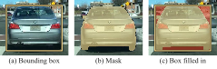
YOLO26m is the medium-sized model in the YOLO26 family, with 20.4 million parameters . Its released checkpoint was trained on COCO . The 80 COCO classes include car, so the model can detect cars without fine-tuning on our images. Detections with any other label are discarded. YOLO26m resizes each image until the longer side is 640 pixels and runs in 32-bit floating point. By default, Ultralytics uses a head that proposes several boxes per car and then removes duplicates with nms (NMS) . When two boxes overlap with an IoU above 0.7, only the more confident one is kept (IoU is defined in Section 8). YOLO26 also offers an NMS-free head. On our test set, that head scored within 0.01 of the default head on box AP, AP50 and F1. We report the default head alone.
SAM 3 has about 850 million parameters and no fixed list of classes. Instead, we give it the text prompt “car” with every image, as described in Section 5. Its input is pixels. It runs in bfloat16 because part of the released backbone requires that format. For each object it finds, SAM 3 returns a box, a mask and a score.
Both models attach a confscore between 0 and 1 to every detection. The score is the model’s own estimate that the box contains a car. YOLO26m’s detection head outputs one probability per class for every box, and the score is the probability of the class car. SAM 3 multiplies two probabilities. The first is the probability that an object query matches the prompt. The second is the probability that the prompted concept appears in the image at all (Section 5.6). Each model uses the score range in its own way. A score of 0.5 from YOLO26m does not mean the same as a score of 0.5 from SAM 3. For this reason, we choose a separate score threshold for each model in Section 8.2.
We call the released models zs because we use them as they are, without fine-tuning on our data. Neither model ever sees the labels. We save every detection above a near-zero score, 0.001 for YOLO26m and 0.01 for SAM 3. The evaluation can then try every possible threshold. In each image, the evaluator uses at most the 100 most confident detections, the COCO default .
The released models learned what a car looks like from other datasets, with other cameras and other labeling rules. Fine-tuning continues their training on our training set. Each model can then adapt to BDD100K’s dashcam images and to its definition of a car. Both models were fine-tuned on the same 6,497 training images and checked on the same 499 dev images.
We fine-tuned all of YOLO26m’s weights with the Ultralytics trainer and its default settings . The run lasted 100 epochs, where one epoch is one pass over all training images. The input size was 640 pixels, and each update used a batch of 16 images. The optimizer, the algorithm that updates the weights, was MuSGD. Its initial lr was 0.01. The learning rate sets how large each update is. The standard Ultralytics augmentations were applied, such as mosaics of four images , horizontal flips and color jitter. Ultralytics keeps the epoch with the best ap (AP) on the dev set, which was epoch 80. Section 8.3 defines this metric.
We did not fine-tune all of SAM 3. The text encoder and the first 30 of the 32 transformer blocks of the vision backbone stay frozen, which means that their weights do not change. We fine-tune the last two backbone blocks, the feature pyramid neck, the fusion encoder, the decoder and all output heads. Together they hold about 8% of the parameters of the image model. Freezing the early layers preserves the general visual features that SAM 3 learned from its large training set. It keeps memory use low as well.
Fine-tuning is driven by a loss. It returns a number that measures how wrong the model’s output is on a training image, and each update tries to make this number smaller. We took the loss terms and their relative weights from the official SAM 3 fine-tuning configuration . The box loss compares each predicted box with its ground-truth box, using L1 and generalized IoU terms . Each query’s score receives a classification loss, and the presence score has a loss of its own. The mask loss compares each predicted mask with its ground-truth mask, using focal and Dice terms. It is computed on sampled points instead of every pixel, which saves memory .
The optimizer was AdamW , a widely used method for updating the weights. Its learning rate was ( for the two backbone blocks). A value this small means that each update changes the weights only slightly, which helps a pre-trained model keep what it already knows. We used a weight decay of 0.1 and gradient clipping at 0.1. The model saw one image at a time, and gradients were accumulated over four images before each update. The learning rate warmed up over the first 300 updates and then followed a cosine decay to 10% of its peak. Each training image was resized to a random square size between 480 and 992 pixels, padded to 1008, and flipped horizontally at random.
The official configuration uses a learning rate of . Before the full run, we checked whether the model could learn a handful of training images. At it could not fit even a single image. At , its AP on eight training images rose from 0.563 to 0.663 within 80 updates. That result made us choose the lower rate.
Three details of the released code mattered. First, the backbone computes its MLP layers with a fused kernel that cannot run with gradients. We run the frozen blocks without gradients and send the two fine-tuned blocks through a standard PyTorch version of the same computation. Second, the point-sampled mask loss fails on images that contain no cars. The training set has 171 such images, and we set their mask loss to zero. Third, the frozen layers stay in evaluation mode. Otherwise, their drop-path regularization would stay active even though these layers are frozen. Drop-path randomly skips parts of the network during training.
The SAM 3 run lasted five epochs. Table 1 shows the dev scores after each epoch. Dev AP rose from 0.534 to 0.559 and was still rising at the end, so a longer run might help a little more. We kept the checkpoint from epoch 5, the best on dev. An earlier run had frozen the whole backbone and fine-tuned the neck, the fusion encoder, the decoder and the heads. It peaked at a dev AP of 0.546 after one epoch and did not improve after that. We chose between the two runs by dev AP. Only the chosen checkpoint was ever run on the test images.
Fine-tuning YOLO26m took 4.9 hours on one GPU. Fine-tuning SAM 3 took 7.1 hours and needed at most 6.6 GiB of GPU memory. The SAM 3 run used a computer in the computer science lab at Carleton College, which has an NVIDIA RTX A2000 GPU with 12 GB of memory. We call it the lab GPU. The speed measurements of Section 8.6 were made on the same machine.
| Epoch | Box AP | AP50 | AP small |
|---|---|---|---|
| 0 | 0.534 | 0.779 | 0.336 |
| 1 | 0.549 | 0.791 | 0.343 |
| 2 | 0.548 | 0.796 | 0.344 |
| 3 | 0.554 | 0.797 | 0.349 |
| 4 | 0.557 | 0.799 | 0.354 |
| 5 | 0.559 | 0.800 | 0.357 |
A detector can be wrong in two ways. It can miss a car, or it can report a car that is not there. A useful metric must count both kinds of mistakes. It must also decide how closely a predicted box has to fit a real car to count as a hit. This section defines the metrics we report. Box and mask scores come from the COCO evaluator , the standard tool for comparing object detectors.4
Let be the set of pixels inside a predicted box, and let be the set of pixels inside a ground-truth box. How well the prediction fits is measured by their iou (IoU), also known as the Jaccard index , where is the number of pixels in a set. The numerator counts pixels in both boxes, and the denominator counts pixels in at least one of them. The IoU is 1 when the two boxes are identical and 0 when they do not overlap. For example, suppose both boxes are pixels and the predicted box is shifted 10 pixels to the right and 10 pixels down (Figure 7a). The boxes then overlap in a region, so Even a small shift lowers the IoU a lot.
Using the IoU to judge detections goes back to the PASCAL VOC challenge. There, a detection counted as correct when its IoU with a ground-truth box was above 0.5 . The definition does not depend on the shape of the two sets, and it applies to masks in the same way. For two masks, and are the pixels of the predicted mask and of the ground-truth mask.
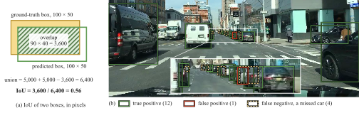
To decide which detections are correct, the evaluator matches detections to ground-truth cars one image at a time. The matching is greedy. Detections are processed from most to least confident. Each one is matched to the car with which it has the highest IoU among the cars not yet matched, provided that this IoU reaches a chosen threshold. A match is never changed afterwards, even if a later detection would fit that car better. Each car can therefore be matched only once, and a second box on the same car counts as a mistake. PASCAL VOC and COCO both match detections in this way . A matched detection is a true positive (). A detection without a match is a false positive (), and a car that no detection matches is a false negative (). Figure 7b shows all three cases on one test image.
precision and recall are standard measures from information retrieval . Precision, written , is the share of detections that are real cars. Recall, written , is the share of real cars that are detected, The f1 combines the two in their harmonic mean, which is high only when both precision and recall are high.
These three numbers depend on which detections we keep. Every detection comes with a confidence score between 0 and 1, the model’s own estimate that its box contains a car. Section 7.2 describes how each model produces it. We keep detections whose score is at least a score threshold. A lower threshold keeps more detections, which raises recall but usually lowers precision. For each model, we chose the threshold that gives the highest F1 on the dev set, with matching at IoU 0.5. The dev set is the 499 images set aside from the training split in Section 7.1. This threshold was then used unchanged on the test set.
Consider the test image in Figure 7b, which contains 16 cars. zs YOLO26m keeps 9 detections above its threshold, and 8 of them match a car. Its precision is , its recall is , and its F1 is 0.64. Fine-tuned YOLO26m, the model shown in the figure, keeps 13 detections on the same image. Twelve of them are correct, which gives a precision of 0.92, a recall of 0.75 and an F1 of 0.83. Both versions raise a single false alarm. The gain comes from finding four more cars.
One threshold describes just one way of using a model. ap (AP) summarizes all thresholds at once. As the threshold is lowered from the highest score to the lowest, the model keeps more detections. Recall grows, and precision usually falls. Plotting precision against recall for every threshold gives a precision-recall curve . Figure 8 shows this curve for fine-tuned YOLO26m. AP is essentially the area under it . The value is high when a model keeps its precision high while it finds more and more cars.
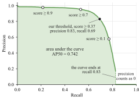
COCO computes this area in two steps . First, it replaces each precision value with the highest precision reached at the same or a higher recall, as PASCAL VOC does , which removes small dips in the curve. Second, it reads this curve at recall levels 0, 0.01, 0.02 and so on up to 1, and takes the average, Steps of 0.01 from 0 to 1 give 101 recall levels, which is where the number 101 comes from. Averaging the curve at evenly spaced recall levels is a simple way to measure the area under it.
A model’s curve does not reach every recall level. Even at the lowest threshold, a model still misses some cars, and its recall stops below 1. In Figure 8, the curve ends at a recall of 0.83 because fine-tuned YOLO26m never finds the remaining 17% of the cars. Beyond this point there is no precision to read off, and COCO counts those recall levels as zero. In this way, AP penalizes a model for cars that it never finds.
The IoU threshold used for matching matters as well. AP50 uses an IoU of 0.5, so a roughly placed box still counts. AP75 uses 0.75 and rewards tight boxes. Our main metric, which we call box AP, is the average of AP over the ten IoU thresholds . This is the primary metric of COCO . It rewards both finding cars and placing boxes precisely. Box AP is reported separately for small, medium and large cars too. A further metric is AR@100, the recall averaged over the same ten IoU thresholds when each image is allowed at most 100 detections . For SAM 3 we add mask AP. It is computed like box AP, except that the matching step takes the IoU between the predicted mask and the ground-truth mask.
Box metrics judge each car as a whole. Pixel metrics instead ask how well a model covers the actual car pixels. In each test image , let be the set of all pixels that the model marks as car, using only its detections above its threshold. Let be the set of all pixels that belong to a ground-truth mask. Neither set has to be a rectangle. We add the counts over all test images, Which pixels a model marks depends on what it predicts. SAM 3 predicts a mask for each car, and is made up of the pixels of its masks. YOLO26m predicts only boxes. We fill each box in, and becomes every pixel inside one of its boxes. To compare the two models on equal terms, SAM 3 is scored with its boxes filled in as well. A filled box always marks some road or background around the car, as the red pixels in Figure 6c show. For this reason, even the ground-truth boxes, filled in, reach a pixel IoU of only 0.791 against the ground-truth masks. A model that predicted every box perfectly would score the same 0.791.
Pixel IoU is the usual accuracy measure for semantic segmentation , applied here to the single class car. The Dice coefficient measures the same overlap on a slightly different scale.
Our 998 test images are a sample, and a different sample would give somewhat different scores. To estimate this uncertainty, we use the bootstrap . We draw 998 images from the test set with replacement. Some images then appear more than once and others not at all. Every metric is recomputed on this resampled set, and the whole procedure is repeated 1,000 times. The range that holds the middle 95% of the 1,000 values is the 95% ci (CI). The resampling is paired . In each round, all four models are scored on the same resampled images. To compare two models, we take the difference of their scores in each round and form its CI in the same way. If the CI of a difference does not include zero, the difference is unlikely to be an accident of which images ended up in the test set.
We measured speed and memory on the lab GPU described in Section 7.3. The models ran one at a time,
with nothing else on the GPU. Each model first processed 10 warm-up
images. Every test image was then timed separately, with a batch size of
one. The GPU was synchronized before and after each image, which makes
the time cover all of its GPU work. The time includes preprocessing, the
forward pass and postprocessing, such as NMS for YOLO26m. Reading the
image from disk and loading the model are not included. Memory is the
peak GPU memory that PyTorch allocated during the run, in
mebibytes (MiB). It leaves out the fixed overhead of the CUDA runtime,
and tools such as nvidia-smi report larger totals for that
reason. The main results below come from this same run.
Table [tab:results] lists every metric for the four models. Figure 9a plots the four main accuracy metrics with their CIs. Table 2 places the scores before and after fine-tuning side by side.
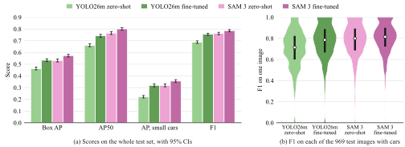
| YOLO26m | SAM 3 | |||
|---|---|---|---|---|
| 2-3(lr)4-5 Metric | Zero-shot | Fine-tuned | Zero-shot | Fine-tuned |
| Box AP | 0.463 [0.451, 0.475] | 0.534 [0.522, 0.546] | 0.532 [0.519, 0.543] | 0.573 [0.562, 0.584] |
| AP50 | 0.661 | 0.742 | 0.766 | 0.801 |
| AP75 | 0.491 | 0.567 | 0.562 | 0.606 |
| AP small | 0.222 | 0.319 | 0.319 | 0.356 |
| AP medium | 0.686 | 0.728 | 0.713 | 0.764 |
| AP large | 0.858 | 0.901 | 0.897 | 0.935 |
| AR@100 | 0.531 | 0.596 | 0.612 | 0.635 |
| Threshold from dev | 0.194 | 0.370 | 0.508 | 0.551 |
| Precision | 0.805 | 0.830 | 0.822 | 0.830 |
| Recall | 0.602 | 0.692 | 0.711 | 0.746 |
| F1 | 0.689 [0.678, 0.699] | 0.755 [0.746, 0.764] | 0.762 [0.752, 0.772] | 0.786 [0.777, 0.794] |
| Pixel IoU, filled boxes | 0.533 | 0.740 | 0.719 | 0.744 |
| Mask AP | 0.494 | 0.546 | ||
| Pixel IoU, masks | 0.837 | 0.899 | ||
| Dice, masks | 0.911 | 0.947 | ||
| Latency (ms per image) | 10.4 2.8 | 10.4 1.8 | 429.1 8.4 | 426.7 11.1 |
| Images per second | 96 | 96 | 2.3 | 2.3 |
| Peak GPU memory (MiB) | 159 | 159 | 5,990 | 5,992 |
| YOLO26m | SAM 3 | |||||
|---|---|---|---|---|---|---|
| 2-4(lr)5-7 Metric | Before | After | Change | Before | After | Change |
| Box AP | 0.463 | 0.534 | +0.071 | 0.532 | 0.573 | +0.041 |
| AP50 | 0.661 | 0.742 | +0.081 | 0.766 | 0.801 | +0.035 |
| AP75 | 0.491 | 0.567 | +0.076 | 0.562 | 0.606 | +0.044 |
| AP small | 0.222 | 0.319 | +0.097 | 0.319 | 0.356 | +0.037 |
| Precision | 0.805 | 0.830 | +0.025 | 0.822 | 0.830 | +0.008 |
| Recall | 0.602 | 0.692 | +0.090 | 0.711 | 0.746 | +0.035 |
| F1 | 0.689 | 0.755 | +0.066 | 0.762 | 0.786 | +0.024 |
Fine-tuned SAM 3 is the most accurate of the four models (Table [tab:results]). Its box AP is 0.573, against 0.534 for fine-tuned YOLO26m. The 95% CI of this lead runs from 0.034 to 0.044 and does not include zero, so the lead is not an accident of the test images. AP50, AP75, small cars and F1 show the same lead. The two fine-tuned models are level in just two places. Both reach a precision of 0.830, and their pixel IoU with filled boxes is almost equal, 0.744 against 0.740.
Fine-tuning helped both models (Table 2). Every score went up, and YOLO26m gained more. Its box AP rose by 0.071, while SAM 3’s rose by 0.041. The largest gain in the table is YOLO26m’s AP on small cars, which rose by 0.097. zs SAM 3 already matched our labels better, which left it less room to improve. As a result, zs SAM 3 and fine-tuned YOLO26m end up tied on box AP, 0.532 against 0.534. A gap this small is well within the uncertainty of the test set. The two still differ in character. zs SAM 3 finds more cars, with an AP50 of 0.766 against 0.742. Fine-tuned YOLO26m fits its boxes more tightly, with a pixel IoU of 0.740 against 0.719.
Most of the improvement comes from recall. At each model’s threshold, precision stays between 0.805 and 0.830 for all four models. Recall, in contrast, climbs from 0.602 for zs YOLO26m to 0.746 for fine-tuned SAM 3. Counted in cars, the four models miss 4,273, 3,301, 3,101 and 2,722 of the 10,733 test cars, in the order of Table [tab:results].
Small cars are the main source of error for every model. Box AP on large cars is between 0.858 and 0.935, but on small cars it drops to between 0.222 and 0.356. More than half of the test cars are small, and they pull down the overall score of every model.
The scores above are computed over the whole test set. Figure 9b shows how much F1 varies from image to image. For every model the images are spread widely. The middle half of the images lies between 0.60 and 0.82 for zs YOLO26m and between 0.72 and 0.90 for fine-tuned SAM 3. Better models mainly have fewer bad images. The share of images with an F1 below 0.5 falls from 11% for zs YOLO26m to 3% for fine-tuned SAM 3.
The third block of Table [tab:results] holds the mask metrics. Only SAM 3 predicts masks, and the YOLO26m columns are empty there. Fine-tuning raised SAM 3’s mask AP from 0.494 to 0.546 and its pixel IoU with masks from 0.837 to 0.899. Because a mask follows the outline of the car, it can go far beyond the 0.791 that even perfect boxes reach (Section 8.4). Measured with its boxes filled in instead, fine-tuned SAM 3 reaches 0.744, about the same as the 0.740 of fine-tuned YOLO26m.
Accuracy comes at a high cost, as the last block of Table [tab:results] shows. On the lab GPU, YOLO26m needs 10.4 ms per image and SAM 3 needs about 430 ms. YOLO26m is about 41 times faster, processing 96 images per second against 2.3. Its peak GPU memory is 159 MiB, while SAM 3 uses about 5,990 MiB, 38 times more. Fine-tuning changes neither number, because it changes the weights and not the architecture. BDD100K’s videos are recorded at 30 frames per second . On this GPU, YOLO26m could keep up with every frame. SAM 3 could process only about one frame in thirteen.
Section 7.1 described how we replaced the original merged boxes with one label per car. Table 3 shows how much this change matters. For each zs model, it gives the same three scores twice. The columns marked Merged are measured against the original merged boxes, and those marked Per car against our per-car labels. Both cases use the same models. Only the labels they are compared with differ.
Against the merged boxes, box AP was about a third of its real value, and the two models looked tied at 0.150 and 0.159. With one label per car, SAM 3 is clearly ahead, 0.532 against 0.463. The reason is the mismatch described in Section 7.1. Both models predict one box per car. When the label is a single box around a row of cars, a correct detection of one car fails the IoU test. The old scores mostly measured the merging, not the models.
| YOLO26m | SAM 3 | |||
|---|---|---|---|---|
| 2-3(lr)4-5 Metric | Merged | Per car | Merged | Per car |
| Box AP | 0.150 | 0.463 | 0.159 | 0.532 |
| AP50 | 0.291 | 0.661 | 0.306 | 0.766 |
| AP small | 0.061 | 0.222 | 0.082 | 0.319 |
The averages above tell us how often each model is right, but not where it goes wrong. To find out, we looked at individual cars and images. A car counts as found when a detection above the model’s threshold matches it at IoU 0.5, the same rule that defines recall.
Table 4 compares the two fine-tuned models car by car. Each of the 10,733 test cars falls into one of four groups. Both models find it, only SAM 3 finds it, only YOLO26m finds it, or neither does. The rows split the cars by size, using the COCO size classes of Section 7.1. A car is small if its ground-truth mask covers fewer than pixels, large if it covers more than pixels, and medium otherwise.
Both models find 7,112 of the 10,733 test cars, and neither finds 2,402. Fine-tuned SAM 3 finds 899 cars that YOLO26m misses, while YOLO26m finds 320 that SAM 3 misses. Most of SAM 3’s extra cars are small, but it has an edge on medium cars as well (177 against 28). Even together, the two models would find 77.6% of the cars. That is not much more than the 74.6% that SAM 3 finds alone.
| Only | Only | ||||
| Size | Cars | Both | SAM 3 | YOLO26m | Neither |
| Small | 5,941 | 2,722 | 701 | 291 | 2,227 |
| Medium | 3,209 | 2,835 | 177 | 28 | 169 |
| Large | 1,583 | 1,555 | 21 | 1 | 6 |
| All | 10,733 | 7,112 | 899 | 320 | 2,402 |
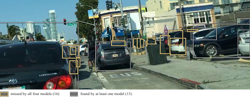
Next we counted the cars that all four models miss (Table 5). There are 2,211 of them, 21% of the test cars. Is that more than chance? Suppose the four models made their mistakes independently of each other. The chance that all of them miss a given car would then be the product of their four miss rates. Every model misses small cars far more often than large ones, and we apply this rule within each size class. For small cars it predicts about 360 shared misses. In fact, 2,051 small cars are missed by all four. Over all sizes, the 2,211 shared misses are about six times the expected number, and 93% of them are small cars. Even among medium cars, where the same rule predicts less than one shared miss, 156 are missed by every model.
Figure 10 shows what these cars look like in one test image. The image contains 29 cars, and all four models miss 16 of them. Twelve of the 16 are small in the image because they are far down the street or almost completely hidden. The other four are larger, but they are still partly hidden behind other cars or objects.
The better a model is, the larger the share of its misses that are these shared cars. They make up 52% of the misses of zs YOLO26m, 67% for fine-tuned YOLO26m, 71% for zs SAM 3 and 81% for fine-tuned SAM 3. A better model fixes its own mistakes first and is left with the ones that every model makes. This suggests that these cars are hard because of the images themselves. Many are tiny, far away or partly hidden. The difficulty does not come from a weakness of one particular model.
Whole images show the same pattern. We computed each fine-tuned model’s F1 on every test image that contains at least one car, 969 images in all. For each model we then took the 10% with the lowest F1, 97 images. The two lists share 50 images. If the hardest images of one model had nothing to do with those of the other, we would expect about 10 in common.
The panoptic labels we use have no time-of-day tags, and the BDD100K labels that do have them cover none of our test images. As a simple measure of how dark a scene is, we used the mean brightness of each image. On the darkest quarter of the images, fine-tuned SAM 3’s per-image F1 is higher than fine-tuned YOLO26m’s by 0.021 on average. On the other images, the gap is 0.041. SAM 3’s advantage is about half as large in the dark.
Our results show a clear trade-off. Fine-tuned SAM 3 is the most accurate model we tested and the only one that outlines cars at the pixel level. Fine-tuned YOLO26m is close behind. It is 41 times faster and needs 38 times less GPU memory.
Fine-tuning helped about as much as switching to the larger model. It raised YOLO26m’s box AP by 0.071, enough to catch up with zs SAM 3. The labels mattered even more. With the original merged boxes, box AP was about a third of its real value, and the difference between the models disappeared.
A self-driving car asks two things of its detector at the same time. The detector has to be fast, and it has to find nearly every car. Lin et al. conclude that a self-driving system should process the traffic scene within 100 ms and do so at least ten times per second. Only then does it react faster than a human driver. This budget covers the whole system, which must track objects, locate the car and plan its path as well. Detection can use only a part of it.
SAM 3 fails the first requirement. On our lab GPU it needs about 430 ms for a single image, more than four times the whole budget. From a video at 30 frames per second, it can process one frame in thirteen. The computer in a car is limited in power and cooling too , which makes a model of this size even harder to run there.
YOLO26m meets the speed requirement with 10.4 ms per image, but it fails the second requirement. At its threshold, fine-tuned YOLO26m misses 31% of the test cars. SAM 3 would not solve this even if it were fast enough. Fine-tuned SAM 3 still misses 25% of the cars, and about one car in five is missed by all four models (Section 10). Most of these shared misses are small cars, which are usually far away and not an immediate danger. But a car that is far away now can be close a few seconds later. Some of the shared misses are nearby cars that are partly hidden (Figure 10). A detector that finds three cars out of four is not enough when a single missed car can cause a crash.
Our test covers a limited part of what a self-driving car needs. We scored single images from one front camera and no object class other than cars. Real systems combine several sensors, such as cameras, LiDAR and radar . They follow each object over time, which can recover a car that one image misses. They have to detect pedestrians, cyclists, trucks and many other objects besides cars. Our results therefore do not show that these models cannot be one part of a self-driving system. They show that neither model, used alone on single images as we tested it, is enough for one.
Many other tasks need just one of the two requirements. For these tasks our results are encouraging.
YOLO26m suits tasks that need speed on small hardware and can tolerate some missed cars. It processes 96 images per second and needs 159 MiB of GPU memory, which leaves room on small and cheap devices. Possible uses are counting traffic at an intersection, checking which spaces in a parking lot are taken, and warning a human driver about the car ahead. In these tasks the cars of interest are close to the camera and therefore large in the image. On large cars, fine-tuned YOLO26m reaches a box AP of 0.901. A miss here means a wrong count, or a missing warning for a driver who is still in control. That is far less serious than a miss by a car that drives itself.
SAM 3 is the better fit when accuracy or masks matter and time does not. The clearest example is labeling recorded driving images. Pixel-level labels are slow to draw by hand. For the Cityscapes dataset, labeling and checking a single image took more than 1.5 hours on average . Fine-tuned SAM 3 reaches a pixel IoU of 0.899 with its masks, and a text prompt is all it needs to look for a new kind of object. It could produce a first version of such labels for a person to correct. The authors of SAM 3 built its training data with a similar loop between the model and human annotators . For this kind of offline work, half a second per image does not matter.
All four models struggle with the same cars. About one car in five is missed by every model, far more often than chance predicts, and almost all of these cars are small. Even fine-tuned SAM 3, the best of the four, still misses them. Small cars therefore remain the main open problem for both approaches, in self-driving and in every other use.
We thank our advisor, Layla Oesper, and the Carleton College Computer Science department, specially Mike Tie for their guidance, feedback, and GPU computing resources.
The overall cost function is the average error across all training examples in a batch or dataset:
The vector indicates the direction in parameter space that maximally increases error by defining partial derivatives of the cost function with respect to all the different weights and biases of the network. Here, partial derivatives are basically asking how changing a specific variable will affect the overall rate of change.
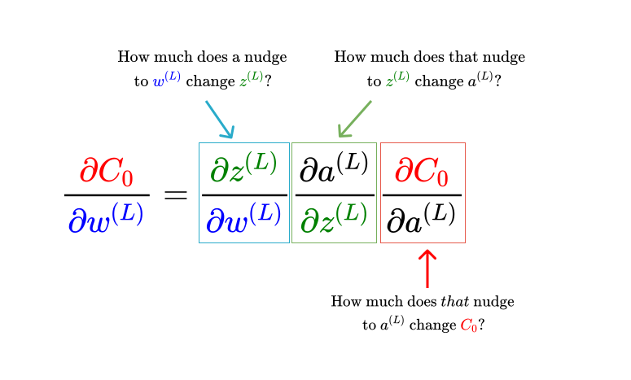
Evaluating each factor directly:
Combining them yields:
The weight yield [eq:weightYield] tells us how a nudge to that one particular weight in the last layer will affect the cost. This can also be done for bias (reapplying the chain rule) :
To calculate derivatives for earlier layers (), the error sensitivity must be propagated backward. Because an activation in layer influences the cost through every neuron in layer that it feeds into, its partial derivative sums over all outgoing connections:
Once is obtained, the exact same chain-rule mechanics apply recursively to find and .
Beyond these technical challenges, autonomous vehicles also raise important ethical questions. Much of the popular discussion has centered on autonomous vehicle safety, such as variations of the trolley problem thought experiment. In addition, debate still subsists around issues such as the environment, ownership, criminality, and safety .↩︎
Vision transformers benefit from square images with dimensions divisible by patch and window sizes, aligning cleanly with GPU memory layouts and matrix multiplication operations. Where any image such as benefits. SAM 3’s resolution of since it uses a patch size for its Vision Transformer backbone to balance spatial resolution with computational efficiency.↩︎
You can read more about the underlying mathematics in ↩︎
Padilla et al. give a detailed survey of these metrics.↩︎